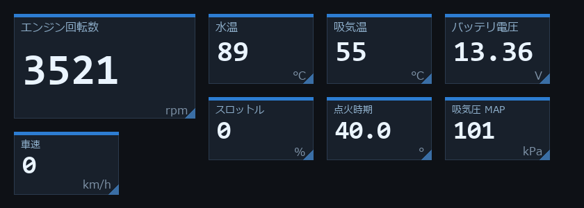

Mazda MX-5 NC (NCEC / LF-VE) factory ECU · Renesas SH7058 · CAL ID LFG7EG
v2.81 ・ 2026-11-18
Setup, usage, tuning features, flashing, analysis notes and the full map analysis in one document. Use the table of contents on the left (below on narrow screens) or the browser search (Ctrl+F).
⚠ No warranty; use at your own risk. Keep the original read-out of every ECU in rom_data/ and do not cut power while flashing. Defeating emissions monitoring or suppressing emissions DTCs is out of scope for this project.
This is the English edition of the manual. It is a condensed version of the Japanese chapters (the Japanese edition, map_analysis_JA.html, is the complete one). Addresses and values apply to CAL ID LFG7EG (2005 Mazda MX-5 NC, chassis NCEC, LF-VE, Denso 279700-4073, Renesas SH7058).
Safety. No warranty; use at your own risk. Changing ignition, fuel, limiters or the electronic throttle can damage the engine or make the car undriveable. Keep the original read-out of every ECU in rom_data/. Do not cut power while flashing. Defeating emissions monitoring or suppressing emissions DTCs is out of scope for this project.
1. Setup (Windows)
Requirements: Windows 10/11, Python 3.10+ (developed on 3.14), a gs_usb / candleLight CAN adapter (DSD TECH SH-C30L), CAN wiring at 500 kbps (request 0x7E0, response 0x7E8), a stable power supply for a bench ECU.
Adapter driver: with Zadig, list all devices, select "gs_usb" / "candleLight" and install the WinUSB driver. Check with python tools/probe.py.
Files you supply (not distributed publicly): the LibreTuner mx5_nc definitions in defs/libretuner/ (main.json + LFG7EG.json), your ROM dump in rom_data/, and the NC1 SBL (Decryption_sbl/sbl_nc1_flash_0x2000.bin, 0x1800 bytes) if you want to flash.
Start: double-click NCEC_ROM_Editor.bat (NCEC_ROM_Editor_quiet.bat hides the console). On start the editor opens rom_data/ecu_readout_yahooauction.bin if it exists.
Folder layout after v2.71:
Path
Content
ncec_editor.py, ncec_dashboard.py, ncec_chart.py
Editor, dashboard, log chart
ncecu/
Library: definitions, ROM access, checksum, CAN / ISO-TP, flashing, patches
On Windows the gs_usb driver path costs about 1.3 ms of USB round trip per CAN frame, so a full flash takes about 273 s. Under WSL2 the Linux kernel sends the frames (socketcan) and the same flash takes about 58 s (measured). Setup, once per PC:
wsl --install -d Ubuntu-24.04 (admin PowerShell; wsl --update if WSL is already installed).
winget install usbipd (optional; step 3 installs it if missing).
With the adapter plugged in, right-click tools\setup_ncec_wsl.ps1 → Run with PowerShell. It binds the adapter (VID:PID 1d50:606f), installs python3-tk / python3-can in WSL and installs the can0 start-up helper.
From then on, double-click NCEC_Editor_WSL.bat. It attaches the adapter to WSL, brings can0 up at 500 kbps and starts the editor with NCEC_CAN=socketcan:can0.
If communication stops: Settings → CAN connection → Reconnect. If the dialog reports that the USB/IP link is gone (this happens when Wi-Fi reconnects or the PC resumes from sleep), close the editor, run wsl --shutdown in PowerShell and start NCEC_Editor_WSL.bat again. Turn Wi-Fi off and keep the PC awake while flashing.
Layout: toolbar (open / save / read ECU / compare / Live / record / replay / write ECU), a tree of tables by category on the left, the selected map on the right with axis labels, a description area, and a status line (file, definition, checksum state).
Editing: click a cell, type a value, press Enter. Save recalculates all checksums (table at 0xFF650–0xFF7FC). Nothing is written to the ECU until you press ECU Write.
Search: type part of a table or category name (Japanese or English). Since v2.71 a query starting with 0x searches by address:
0xD6CDC — the table (or axis) at that address; an address in the middle of a table also matches.
0xD6C — while typing, every table whose address starts with those digits.
0xFFFF6D5C — a RAM address lists the tables that use that variable as an axis input (e.g. RPM 0xFFFF6D5C, load 0xFFFF6EC8, coolant 0xFFFF6CC8). The match uses this ROM's real addresses, found from the ROM code (ncecu/axis_ram.py); the number at the end of an axis name (e.g. RPM_6DD8) is a RAM address of another ROM used by LibreTuner and is not used.
The description area shows the axis input RAM of the open table when it is known.
Language: the JA / EN button. Help shows the built-in help and opens this manual.
3.1 Split view, separate windows and paired tables (v2.80)
View menu: single (Ctrl+1), 2 side by side (Ctrl+2), 2 stacked (Ctrl+3), 4 = 2x2 (Ctrl+4), 3 = 1 left + 2 right (Ctrl+5). Drag the borders to resize. A table picked in the tree opens in the active pane (blue frame); click a pane or use Ctrl+Tab to change it, or right-click a tree item and choose the pane. Axis headers stay fixed while the table scrolls. Ctrl+wheel / Ctrl++ / Ctrl+- zoom.
Pane buttons: ⇔ = show the paired control/monitor table next to it (Ctrl+P), ⧉ = open in a separate, freely placed window (Ctrl+Shift+D), × = clear the pane.
Paired tables (23 control/monitor Data Integrity pairs): the line under the pane title says whether all cells are equal; differing cells get a red corner. With View → Paired editing (on by default) every cell or axis edit is written to both copies; undo reverts both. "Copy selection to the paired table" fixes an existing mismatch.
The layout, the tables and zoom of each pane, separate windows and the window size/position of the editor and the dashboard are restored on the next start (ui_settings.json).
3.2 Editing operations and undo (v2.80)
Select with click / drag / Shift+click / Shift+arrows; click an axis header for a whole row or column, the corner (or Ctrl+A) for everything. Typing a number with several cells selected sets them all.
Operations on the selection: + / − (small step), PgUp / PgDn (large step), = set, A add, * change by %, M multiply, H / V interpolate along the axis values, B interpolate from the four corners, S smooth, Ctrl+D / Ctrl+R fill down / right, Ctrl+C / Ctrl+V (tab-separated, works with spreadsheets), Ctrl+Shift+R revert to the saved values, Space jump to the live ● cell. I sets the per-table step.
Undo Ctrl+Z / redo Ctrl+Y cover cell and axis edits and patches (300 steps). Cells changed since the last save get an orange corner. Right-click a table for all of these with their keys. Under WSL (WSLg) the right-click menu is drawn inside the editor window (v2.81), because WSLg shows a separate menu window late (it flashes on an outside click and lingers about 1 s); Windows keeps the native menu.
To type a negative value, start editing with Enter or F2 first (a bare "−" means decrease).
3.3 Keyboard shortcuts (v2.80)
Settings → Keyboard shortcuts… lists every action with its keys; assign several keys per action, remove them, or reset. Table actions only work while the table has focus, so typing in the search box is not disturbed. Navigation keys and digits are reserved; ECU flashing has no shortcut on purpose. Defaults: Ctrl+O/S/Shift+S file, Ctrl+Z/Y undo/redo, Ctrl+F search, Ctrl+T tree, Ctrl+E table, Ctrl+PgDn/PgUp next/previous table, F5 Live, F6 dashboard, F8 record, F9 log chart, F1 help.
4. Live monitoring and map following
Live ▶ polls OBD-II Mode 01 PIDs (up to 6 PIDs per request) and draws the current operating point as a red ● on the open map.
Signals used for the ●: RPM (0x0C), engine load, coolant temperature, intake temperature, pedal position, throttle position.
Load is absolute load (PID 0x43), not calculated load (PID 0x04). The map load axis (LOAD_6F44; input RAM 0xFFFF6EC8 in this ROM) matches PID 0x43: in the logs the knock-listen load thresholds (enter at 0.40, leave at 0.353) coincide with PID 0x43 crossing 40 % / 36 %, while PID 0x04 read 52 % / 44 % at the same moments. Up to v2.70 both PIDs fed the same "load" role, so the ● jumped to the wrong row about once a second; fixed in v2.71.
Pedal position for pedal-axis maps is normalised from the raw sensor value of PID 0x49 (about 31.4 % released, 72.3 % floored) to 0–100 %. This is an approximation derived from 10,800 logged samples against the ECU-internal pedal value.
Intervals (Settings → Live PID intervals): every signal uses the same list — Every cycle / 0.1 s / 0.2 s / 0.5 s / 1 s / 2 s / 5 s / 10 s / Ignore. Ignore means the signal is not read. Keep at most six signals on "every cycle" so one request per cycle is enough.
Defaults: every cycle = RPM, absolute load, throttle, pedal, timing, MAP. MAF and measured AFR at 0.2 s (slow items ride along in the same request). Duplicates are ignored by default: calculated load (0x04), pedal sensor E (0x4A), brake switch 2.
Map following is protected: signals that are axes of the open map are read even if set to Ignore or to a slow interval.
Live RAM budget: Mode 23 reads cost one round trip per memory block, so at most two blocks are read per cycle, most-overdue first. PID timing stays constant; RAM channels become best-effort.
Scheduler simulation (request counts are exact; the time per request is an assumption and was not measured on hardware): PID requests per cycle drop from 2.0 to about 1.2; with six RAM channels the cycle rate improves by roughly 1.5×.
5. Dashboard, logging, replay, chart

Dashboard: tiles in number / bar / gauge / graph mode. Right-click a tile for display mode, smooth update, update interval (same list as above), colour, scale, alarm value. Since v2.80 the window opens at its last size and position. Under WSL (v2.81) the menu is drawn inside the window: "display mode" and "update interval" fold out when clicked, and long lists (Add item) use columns.
Record ● writes logs/livelog_*.jsonl; Replay plays a log back (the ● and the dashboard move). Settings → Log analysis chart stacks channels of a log as time series.
6. Live RAM (Mode 23) and knock
The ECU only serves standard PIDs. Its ReadMemoryByAddress handler (23 <addr:4> <size:2> → 63 <data>) already allows RAM 0xFFFF0000–0xFFFFE000, but only in the programming session after authentication. Reading RAM live in the default session needs three bytes changed in the ROM by the user (0x84C0400→10, 0x84C0706→0F, 0x7F7348F17→0009) plus a checksum recalculation. This removes the authentication for reads, so anyone on the bus can read the ECU; the tool documents the change but does not generate it. Power-cycle the +12 V line after flashing.
Channel
Address
Type
Meaning
Clutch switch
0xFFFF7100
u8
0 released / 1 pressed (found on the car with tools/ram_diff.py)
Brake switch
0xFFFF70EC
u8
0 / 1 (0xFFFF70EE is the redundant second switch; ignored by default)
Decel status
0xFFFF6FCC
u8
0 driving / 1 coasting, neutral, idle
Gate APP
0xFFFF56C8
f32 %
Pedal value the flat-shift gate reads
Injector pulse width
0xFFFF7380
f32 ms
0 ms during decel fuel cut; duty % is derived
Exhaust temperature (estimate)
0xFFFF777C
f32 °C
Catalyst model, no real sensor
Knock level
0xFFFF4E20
f32
Knock sensor level per combustion event (internal scale)
KR (knock retard)
0xFFFF7C44
f32 °
0 = none; steps to 1.7° on a knock event, then decays
Knock findings (2026-11-14). Knock control works and three KR events are in the logs.
The sensor is analogue: per cylinder event the ECU computes a level (0xFFFF4E20) and compares it with an adaptive threshold (0xFFFF4E58). The 0/1 flag 0xFFFF4E14 (mirror 0xFFFF7E89) is only the result of that comparison.
0xFFFF7C44 is the real KR: +1.7° per event (0xBBCAC), −0.17° per event while listening (0xBBF98), −0.3515° per event below 40 % load (0xBC0FC), maximum 8° (0xBBD20). The logged values match these constants exactly.
0xFFFF7C3A, formerly labelled "knock count", counts combustion events since engine start and saturates at 255. A constant 255 is normal.
Knock is only evaluated from 1000 to 5250 rpm and above 40 % load.
Not established: how close wide-open throttle runs are to the threshold. Log 0xFFFF4E20 and 0xFFFF4E58 together to see the margin.
7. Tuning basics
Most maps are RPM × load. "Load" is cylinder air charge; in OBD terms it is absolute load (PID 0x43).
RPM axes end at 7000 rpm; above that the 7000 column is held. The rev limit is a fuel cut.
Change one thing at a time, log before and after, and keep the previous ROM.
Change timing in steps of 1–2° while watching KR. High load with lean mixture and too much advance is the dangerous combination.
Tables are often duplicated for the safety monitor ("Data Integrity"). Editing only the control copy makes the monitor disagree and can force a fail-safe. Edit both copies to the same values.
Every patch changes only the ROM in memory, lists what it changed (before → after), refuses unsupported ROMs and re-checks the result (only the intended addresses and the checksum table may differ).
8.1 Flat shift
Read-only design: nothing is written to RAM or registers. Active only while clutch (0xFFFF7100) is pressed and pedal > threshold and RPM > threshold and speed > minimum. Method 0 retards the final advance, method 1 skips coil charging (no spark). Calibration at 0xDE300–0xDE318 (defaults: pedal 80 %, 7000 rpm, 10 km/h, retard 20°, method 0). test_mode = 1 ignores the speed gate for standstill checks; set it back to 0 before driving. Both methods were confirmed on the car on 2026-11-01. The stock clutch throttle cut (0xC53BC) only works below 2 km/h.
8.2 Anti-lag (overrun pops)
The engine is naturally aspirated, so this makes sound only. Fuel burns in the exhaust: it heats the catalyst and exhaust.
Name
DFCO
Active
Retard
Tip-in recovery
A
DFCO off
off
all RPM
deep (~22°)
stock
B
RPM gate (recommended)
on
above the active rpm
20°
stock
C
RPM gate + response (new in v2.71)
on
above the active rpm
shallow (12°)
fast
D
Response, DFCO off (the "C" of v2.70 and earlier)
off
all RPM
shallow (12°)
fast
Active rpm (B and C): 1500–6000 rpm in steps of 100, default 3000. The decel fuel-cut table 0xCC774 (6 gears × 5 rpm points) is interpolated over its own RPM axis 0xCC748; the patch moves the axis breakpoints to [x0, x1, active, active+1000, x4] with values [cut, cut, cut, keep, keep]. Below the active rpm the fuel cut works normally (silent); pops fade in above it and are fully active 1000 rpm higher. With the default 3000 the axis is the stock [1000, 2000, 3000, 4000, 5000], byte-identical to pattern B of v2.70. The axis is referenced only by this table's descriptor (0x93E00).
Verified by running the ECU's own table look-up (0x20DC) in the emulator; not tested on the car.
8.3 Faster rev-drop
Speeds up the rev-drop on an upshift by engaging decel fuel cut sooner (enter count 0xC477D, stock 30) and harder (enlean rates 0xCC774, 0xCC694, 0xCC698, 0xCC6A0). Fuel side only; the throttle is not touched. The anti-stall floor 0xC47FC (2312.5 rpm) and the fuel-restore thresholds stay stock. Presets off / mild / strong. It uses the same table as the anti-lag patch in the opposite direction, so use only one of the two in a ROM.
8.4 Drive-by-wire throttle 1:1
Raises the pedal maps (pedal → throttle, 18 × 10) towards 1:1 for a cable-like response: new = stock × (1 − blend) + pedal × blend. Control and monitor copies are written together (1st 0xC7EE4/0xF7C90, 2nd 0xC81B4/0xF7F60, 3rd 0xC8484/0xF8230, 4th–6th 0xC8754/0xF8500, neutral 0xC8A24/0xF87D0), and the commanded maximum (0xC55FC/0xF7C24) is raised by cap_margin. The 50 % cap in 2nd gear at low rpm disappears. Peak power does not change. Not tested on the road.
8.5 Idle target — edit the maps directly
The idle-speed patch was removed in v2.71; edit Idle Speed - Base in the tree.
System
Control
Monitor
Stock (8 points, −40…100 °C)
In gear
0xD6C9C
0xF4DEC
1150, 1150, 1100, 1000, 850, 800, 720, 720 rpm
Not in gear
0xD6CDC
0xF4E2C
1750, 1750, 1500, 1250, 1000, 850, 720, 720 rpm
Always set control and monitor to the same values (with Paired editing on, editing one writes both; see 3.1). Do not touch the slew rate (0xD6AB8 family): the monitor protects it, and changing it produced DTC P0606 and throttle limp mode on the car.
8.6 Cooling-fan temperatures — the values are A/D counts
The coolant thresholds under Engine Fan Control are 10-bit A/D counts of the ECT-sensor voltage, not °C: volts = value × 5 ÷ 1024, and the temperature follows the ECT Scaling - Voltage to ECT curve (0xB8258). The sensor voltage falls as the coolant gets hotter, so a larger value means a lower temperature — raise the value to start the fan earlier. The flag sets when count ≤ activation value and clears when count > deactivation value, so keep the activation value below the deactivation value.
Table (AC Off)
Address
Car stock
Bench original / in-use ROM
Medium, activation
0xBF9F8
96 = ON at 100.1 °C
125 = ON at 90.0 °C
Medium, deactivation
0xBF9FA
103 = OFF at 96.8 °C
132 = OFF at 87.8 °C
High, activation
0xBF9FC
77 = ON at 108.4 °C
106 = ON at 96.0 °C
High, deactivation
0xBF9FE
84 = OFF at 104.6 °C
113 = OFF at 93.3 °C
Guide: 85 °C ≈ 143, 90 °C ≈ 125, 95 °C ≈ 109, 100 °C ≈ 96, 105 °C ≈ 84, 110 °C ≈ 74 (one count is about 0.4 °C). Opening one of these tables shows the conversion in the description area (what temperature the current value switches at, the formula and the guide table); it updates when you commit a value and warns when the activation value is not below the deactivation value. The six integer after-cooling enable/disable tables use the same count; speed thresholds (km/h) are plain values. The timers are counts: the transition delay drops by 1 every 25 ms and the after-cooling timers every 100 ms (from the OS task periods; the 1 ms tick and the 25 ms sub-task were confirmed on the car on 2026-11-17 by comparing ECU counters with the 10 ms CAN frames, the fan timing itself was not timed; the editor shows seconds). A key-on check the same day also confirmed the A/D-to-°C conversion (ECT count 667 = 16.4 °C, the same as the ECU's own coolant value). There is no monitor-side copy of these four thresholds. This comes from the disassembly (0x98F9E compares against RAM 0xFFFF710E, the ECT A/D count); the temperature at which the fan actually starts has not been measured on the car yet.
The block length must be 0x400. The boot area below 0x2000 is never written.
The SBL (NC1, 0x1800 bytes) is required and is not distributed publicly.
CLI: python tools/flash_writeback.py --sbl <sbl> --rom <rom> is a dry run; add --confirm to write. The editor button does the same.
First flash the unmodified read-out and confirm CAL ID and CVN are unchanged. After flashing an edited ROM the CVN changes; that is expected.
Measured times: full flash 273 s on Windows (gs_usb), 58.4 s under WSL2 (socketcan): erase about 17 s, ROM transfer 41 s. A full read-out takes about 206 s; the ECU's own transmit pacing limits it.
If a flash fails: so far every failure was recovered by power-cycling the ECU and flashing again over CAN. This works because the boot area and CAN handlers in block 0 are never written.
Flash endurance is specified at a minimum of 100 cycles. Collect changes before writing.
10. ECU reference
MCU: Renesas SH7058 (SH-2E with FPU, big-endian). Flash 0x00000–0xFFFFF (1 MB), RAM 0xFFFF0000–0xFFFFBFFF, peripheral registers from 0xFFFFC000.
Flash blocks: EB0–EB7 4 KB each (0x00000–0x07FFF), EB8 96 KB (0x08000–0x1FFFF), EB9–EB15 128 KB each (0x20000–0xFFFFF).
Protocol: KWP2000-style services on CAN 500 kbps. OBD-II Mode 01 / 03 / 04 / 07 / 09; 10 81, 10 85, 3E 01; security access 27 01 / 27 02 with a 3-byte seed; ReadMemoryByAddress 23 (4-byte address, 2-byte size, no format byte, up to 0x400 bytes).
Checksum: table at 0xFF650–0xFF7FC, 12-byte entries, 35 regions; corrected on save.
Learned values (idle, throttle) live in battery-backed RAM and survive a reflash; relearning is needed only after the ECU loses battery power.
Boot mode (serial, via FWE / MD pins) erases the whole flash on entry. It cannot read a ROM, but it is the last-resort recovery if the boot block is ever damaged; it needs board access and a complete 1 MB backup.
11. Definition audit and unit fixes
Some tables in the definition have wrong dimensions or point at unused areas. The editor corrects the dimensions it can verify from the ECU's table descriptors and warns on the rest.
The definition carries no units, so the editor infers them. Unit rules were corrected for 22 categories (about 95 tables) and one axis label in ncecu/i18n.py; the bilingual list is in the appendix.
Two control-side idle tables missing from the definition were added in v2.70.
2Appendix
Unit-label fixes (bilingual list)
i18n.py 単位修正一覧 / i18n.py Unit-Label Fix List （原稿 docs/unit_fixes_i18n.md）
NCEC ECU マップエディタ(ncecu/i18n.py の unit_of())に追加した単位推定ルールの一覧。List of unit-inference rules added to unit_of() in ncecu/i18n.py for the NCEC ECU map editor.
背景 / Background: unit_of() は定義に単位が無いためキーワードから単位を推定する。キーワードは category + name を結合して判定するため、カテゴリ名(例 spark, cam timing)や条件節(例 | RPM …)が本来の単位を上書きする誤爆が起きていた。Because the LibreTuner definitions carry no units, unit_of() infers them from keywords in category + name. Category words (e.g. spark, cam timing) and condition clauses (e.g. | RPM …) were overriding the true unit.
方針 / Policy: 各修正は カテゴリ/名称でスコープを限定し、毎回 ROM 全体で他カテゴリへの波及が無いことを回帰確認した。明確な誤りのみ修正し、曖昧なものは推測で書き換えず保留(無単位)とした。Every fix is scoped by category/name and regression-checked ROM-wide for no leakage. Only clear mislabels were changed; ambiguous cases were left unitless rather than guessed.
⚠️ 値はベンチ ECU 1 台の実測確認のみ(この一覧は表示上の単位ラベルの修正で、ROM の値は変えない)。Values verified on one bench ECU only (these are display-label fixes; ROM values are not changed).
2026-11-15。水温しきい値(中速/高速の作動・停止4表＋アフタークーリングの有効・無効6表、いずれも uint16)は ℃ ではなく水温センサ電圧の 10bit A/D 値(電圧=値×5/1024、値が大きいほど低い水温)。ectcount.is_count_table(表名の完全一致)で判定。浮動小数の After Cooling Activation - Estimated ECT Threshold は °C のまま。エディタは説明欄に ℃ 換算を表示。 / Coolant thresholds are ECT-sensor A/D counts, not °C; exact-name match; the editor shows the °C conversion.
24
Engine Fan Control / Engine Sensors - MAF
6
s→ "" →(ファン5) ×0.1s / ×25ms
2026-11-16。ファンのタイマ4・遅延1と、MAF の Transition Delay。いったん無単位にしたが、同日の逆解析で OS のタスク周期から 1 カウントの時間が分かった: アフタークーリングのタイマ=100ms、遷移遅延=25ms(エディタに秒の換算)。MAF の遅延は無単位のまま。 / Counts; the fan count periods were then derived from the OS task periods (after-cooling timers 100 ms, transition delay 25 ms). The MAF delay stays unitless.
25
Fuel Comp OL - Decel Fuel Restore Idle Thresholds
1
km/h→ ""
2026-11-16。RPM divided by VSS Threshold は回転数÷車速の比。無単位にする規則が後ろにあり、カテゴリ側の VSS 判定(km/h)に先に取られていた→先頭へ移動。 / A ratio; the existing rule was shadowed and has been moved to the top.
26
Spark Base - High Fuel Request Transition
1
λ→ %
2026-11-16。High Fuel Request Threshold (Lambda)=6.25 の比較相手は燃料要求の増量%(RAM 0xFFFF7728。0x4DF38)。ヒステリシス(%)と同じ量。 / Compared with the fuel-request enrichment in %.
27
Fuel Target CL - Base (no patch required)
1
λ→ ""
2026-11-16。値 0.02〜1.32 で高負荷ほど大きく、目標λとして成り立たない(意味未確定)。 / The values cannot be a lambda target; meaning unconfirmed.
28
WIP - Torque Model Bank (RE) / WIP - DBW Torque Coordinator (RE)
34
定義を作り直し / rebuilt
2026-11-16。表記述子の読み違い(12バイトずれ)で、各表に次の表の軸・寸法が付いていた。新しい名称に合わせ multiplier→×、model table→無単位 を追加(BMEP=kPa / Throttle=% / Torque=N·m / Spark=° は従来どおり)。 / Rebuilt from the ECU descriptors; unit rules follow the new names.
#19 DTC Thresholds の内訳 / breakdown (9 tables)
対象 / Table
before→after
根拠 / Reason
P0011 … Over Advanced Timer
°→""
uint16 のタイマ計数(timing→° 誤爆) / timer count, not angle
2026-11-16。「(未使用)」→「RAM 0xFFFFxxxx(未特定)」。この軸名は「入力が RAM 変数(名前未特定)」の意味で、未使用ではない。同じ番地を別の軸名で持つ表から分かるもの(6800=オルタ回転数、6808=オルタ温度、8154=界磁デューティ、788F=MAFステージ)はその名前で表示。 / FFFF_xxxx axes are RAM variables with no name yet, not unused.
差・派生量の軸
2026-11-16。接頭辞だけで判定すると元の量と同じ表示になり値域と合わなかった軸を、名前の内容で表示: VSS_DELTA→車速偏差、RPM_6DD8 - IDLE_SPEED→回転数−目標アイドル、IDLE_SPEED_7044 - RPM→目標アイドル−回転数、BARO - ((IAT…→空気密度の指標、VCT_ERR_ACCUM→VCT誤差の累積、ECT_START / ECT_AT_START→始動時水温、APP_DELTA_MODE→アクセル変化モード、ALT_AMPS / ALT_RPM / ALT_TEMP→オルタ電流(A)・回転数(rpm)・温度(°C)、O2S12_V→リアO2電圧(V)、REQ_TORQUE→要求トルク(N·m)、AX_GEN→軸(入力未特定。2026-11-16 の逆解析後は使う軸なし: SHUFFLE_HZ→駆動系のしゃくり振動数(Hz)、BPF_Q→帯域フィルタのQ値、GEAR_ENGAGED→ギア(0=未接続)、TIPIN_STAGE→踏み込みの段階、12×7 の 3 面は LOAD_6F44)。FFFF_xxxx の数字は別 ROM の番地なので、分かったものは中身(オルタの吸気温・電源電圧の最低値・アイドル到達率、2026-11-17 に EVAP のパージ立ち上げ量・吸気負圧(kPa)、監視側の水温の平均・AT の回転比、ノックの負荷の変化量)、残りはこの ROM の実番地を表示。 / Difference and derived axes are labelled by what their name says.
Fuel Status OL - Decel
2026-11-16。Decel Transition - Load Threshold … | In-Gear の軸は回転数(500〜7000)。定義の軸名 LOAD_7004 を RPM_6DD8 に直した(表引きの入力が回転数であることを 0x42206 で確認)。 / The axis is RPM; the definition's axis name was corrected.
データ衛生メモ / Data-hygiene notes (元定義ファイル由来 / from source defs)
これらは解析上そのまま温存(定義ファイルを書き換えていない)。 / Left as-is in analysis (source defs not modified).
3Full map analysis
Notes for every table (127 categories / 922 tables), grouped by subsystem: role, values, units and cautions. Numbers are the as-read calibration of the bench ECU (rom_data/ecu_readout_yahooauction.bin); differences to the car's ECU are in "P. Real-car comparison" and in the per-table diff report docs/ecu_diff_report.html (Japanese; local only, not in the public repository because it contains ROM values). Categories marked i18n fix had a unit, axis-label or translation correction in ncecu/i18n.py.
Map relationships — flowcharts
How the categories connect. Colours group the subsystems used in the table of contents below.
1. Overall ECU control flow — sensors feed an airflow/Load estimate (the Y-axis of every map), which with RPM drives the fuel, spark and air/torque paths; limiters, the torque/throttle monitor, diagnostics and emissions wrap around them.2. Fuel path — airflow and the selected target AFR (CL stoich vs OL power enrichment) set the base pulse width, plus transient/state corrections, closed by front-O2 STFT/LTFT; rear O2 only serves catalyst monitors.3. Spark path — a fuel-request base advance map, plus temperature/cold/EGR/knock/idle/tip-in correctors, clamped by Spark Base Limit then Spark Limits, distributed per cylinder with a rate limiter, and delivered as coil dwell.4. Air / torque / throttle — pedal to torque request (BMEP) to the DBW throttle, watched by the Data-Integrity monitor; VVT/IMRC/IMTV change VE and feed back into Load; idle control and the rev/speed/load limiters override.
Format: each category lists its English name, table count, the source category id, and the full notes. ▸ = a bullet.
A. Fuel — Target AFR (5)
Fuel Target CL - Base (no patch required) (1 table)
category id: Fuel Target CL - Base (no patch required) | note: fuel-target-cl-base-no-patch | 2026-10-06 (corrected 2026-11-16)
One table. Fuel Target CL - Base (Lambda) @0xD4288 (13×10, X = RPM 500–5000, Y = load 0.12–0.88), values 0.021–1.317 (%). It holds how rich the closed-loop (O2 feedback) target is, as fuel enrichment in % over stoich: closed loop aims at stoich (λ1) and this adds a small rich bias.
Patch structure: the CL base exists as 3 categories = Base (no patch required, this one, effective without code modification) / Base (requires patch, needs a code patch to take effect) / Base Patch (the code patch itself). The factory ECU fixes CL to stoich; freely setting a non-stoich CL target requires the patch. This table is the version that is referenced even without the patch.
Meaning (confirmed by reverse engineering, 2026-11-16): the values are enrichment %, not a lambda target. At 0x4ABF4 the table is looked up by RPM × load (RAM 0xFFFF6D5C / 0xFFFF6EC8) into RAM 0xFFFF7844; condition offsets (−0.35 while 0xFFFF8C96 = 1, etc.) give 0xFFFF7828. Summed with the other enrichment terms (0xFFFF7800 / 781C / 7820 / 7840 / 7854) into 0xFFFF782C, 0x4B5B0 forms 100 / (100 + sum%) − 1 and the target lambda 0xFFFF7880 = 1 + the terms; 0xFFFF7880 feeds the closed-loop error (0x4BCD8). With the other terms at 0, 0.5 % → λ 0.995 and the maximum 1.317 % → λ 0.987 (the definition's range hint 0.987–1.0 was this converted lambda). Larger values at high load = richer, so the direction fits. Treated as 0 while bit 2 of 0xFFFF7346 is set. The unit is now %, the definition's range hint 0.021–1.317, and the editor shows the lambda conversion (ncecu/convhint.py).
Closed-loop target AFR that takes effect once the base patch is applied (3 tables). Unit AFR is correct.
Stoich AFR | Stock=14.57, Gas=14.7, E85=9.86 @0xD460C = 14.57 AFR. The stoichiometric reference the ECU uses as λ=1.0. Factory 14.57, US gas 14.7, E85 9.86. Change this when switching fuel (e.g. E85).
Summary (the 3 CL-base categories): Base (no patch) = effective without patch (current factory stoich) / Base Patch (2) = write 9 to enable this / Base (requires patch, this, 3) = Stoich AFR / Target AFR (idle/non-idle) = the freely settable closed-loop target AFR that takes effect after patching. Typical use: set Stoich to 9.86 and patch for E85. This unit is unpatched = factory stoich 14.57. No unit fix.
Toggle (applied / not-applied marker) of a patch that rewrites ROM code rather than a calibration value (2 tables).
Fuel Target CL Patch | unpatched=36647, patched=9 → 36647 (unpatched). Fuel Target CL Patch | unpatched=36620, patched=9 → 36620 (unpatched). Meaning per the name: unpatched=36647/36620, applied=9. Both currently unpatched = feature off. Writing 9 to both locations enables the free closed-loop AFR-target feature.
Relation of the 3 categories: Base (no patch) = current behavior / Base Patch (this, 2) = write 9 to enable the requires-patch target / Base (requires patch, 3) = Stoich AFR 14.57, Target AFR idle/non-idle 14.57 (CL AFR target active after patching; currently factory stoich 14.57). To alter the closed-loop target AFR (e.g. E85 stoich 9.86) apply these 2 patches plus set the AFR on the requires-patch side. This unit is unpatched = factory stoich.
Note: this is code modification (a patch), distinct from a calibration change. Advanced operation affecting emissions/catalyst and O2 learning. Same mechanism as the Patch-DFCO Disable seen elsewhere. Display (fixed 2026-10-06): the λ mis-label was corrected to unitless (added unpatched-marker→unitless in unit_of, unifying the DFCO/immobilizer/UDS-Mode23/STFT patch markers too).
Fuel Target OL - Base (4 tables)i18n fix
category id: Fuel Target OL - Base | note: fuel-target-ol-base | 2026-10-06
Open-loop (power-enrichment) core map: how much richer than stoich at high load / WOT (4 tables). Value = % enrichment over stoich (0 = stoich, up to 36% richer). 4 sheets across 2 condition axes.
APP>WOT threshold, High Knock @0xCD13C (8×13, X=RPM, Y=throttle %): 13.1–36.1%. APP>WOT, Low Knock @0xCD330 (8×13): 13.1–36.1%. WOT-region power enrichment, varies by RPM independent of TP; high/low knock identical on this unit.
APP≤WOT, Low Knock @0xCD53C (13×14, X=RPM, Y=Load): 0–36.1%. APP≤WOT, High Knock @0xCD880 (13×14): 0–36.1%. Near-WOT (part-throttle open-loop) enrichment, 0 at low load → up to 36% at high load/RPM. High-knock version is slightly richer in a few cells (protection).
Summary: open-loop enrichment [%] = 0 (stoich) to 36% (richest at high load/RPM). WOT uses sheets 1/2 (RPM×TP), near-WOT uses 3/4 (RPM×Load); slightly richer under knock. Rich = safe cooling/knock margin; lean = risky at high load. Changes require wideband AFR measurement.
Display (fixed 2026-10-06): the 4 sheets' λ labels are not actual λ (0.7–1.4) but % enrichment over stoich (0–36.1). Added 'fuel target ol is %' to unit_of. Closed loop stays correct: Fuel Target CL-Base=λ (0.02–1.32), CL Stoich/Target AFR=14.57.
Warm-Up Fuel Target OL - Base (11 tables)i18n fix
category id: Warm-Up Fuel Target OL - Base | note: warmup-fuel-target-ol-base | 2026-10-06
Warm-up (open-loop) enrichment definitions (11 tables): richer when cold for post-start stability and early catalyst light-off, returning to normal as it warms.
Warm-Up Target AFR (base enrichment) @0xCCBF0 (1×7, X=ECT): 60 (-40°C) → 0 (80°C). Base enrichment amount by coolant temperature; large when very cold, 0 at 80°C.
Load-increase multipliers ×4 (in-gear / in-gear IMRC / neutral / neutral IMRC) @0xCCA00… (each 1×13, X=Load): ×0.8–4.75. Scale enrichment by load; in-gear max ×3.8, neutral max ×4.75.
Load-increase secondary multiplier | OL @0xCCBA0 (1×13): ×1.0–1.053 (minor sub-coefficient).
Dynamic limiter (/IMRC) @0xCCC28 / CCC60 (each 1×7, X=ECT): 100 (cold) → 0 (warm). Cap on warm-up enrichment.
Multiplier A | IMRC @0xCCC98 (1×7): ×1.0 (no effect). Multiplier B | IMRC @0xCCCCC (1×6, X=idle): ×0.0 (disabled). Decay rate to normal fueling @0xD3C58: 0.269. How fast warm-up enrichment returns to normal.
Summary: warm-up enrichment = base(ECT) × load multipliers (gear/IMRC) × secondary, clamped by the dynamic limiter, decaying to normal at the rate. Rich when cold for stability/catalyst light-off, back to normal when warm.
Display (fixed 2026-10-06): the λ labels on base/limiter/decay were actually enrichment amount/cap/decay-rate (0–60 / 0–100 / 0.27), not λ. Added 'warm+fuel target non-multiplier → unitless' after the multiplier check. The genuine Fuel Target OL (Lambda) keeps λ.
On the moment of returning from decel (fuel cut) to closed loop, applies a brief enrichment then decays it to zero, preventing a lean spike for a smooth reconnect (3 tables). Unit % is correct.
Decel-recovery enrichment | Closed Loop (Not OL), 789C Set @0xD3F9C (1×4, X=index 0–3) = 2.5–5%. | 789C Cleared @0xD3FBC (1×4) = 2–4%. Temporary enrichment added on CL re-entry; two systems by flag 789C, stepped ramp-in.
Decel-recovery lean-out rate to zero | Closed Loop (Not OL), 7890 Expired @0xD3F80 = 3%. After the timer expires, the speed at which the recovery enrichment returns to zero.
Summary: on decel→CL return, apply temporary enrichment (2–5%, switched by 789C, stepped) → after timer 7890 expires, decay to zero at the 3% rate. Prevents a lean spike and smooths CL resumption. Where OL-side Decel Fuel Restore returns fuel from the cut, this handles the transient enrichment on CL resumption (wall-wetting / O2 feedback restart bridge). Flavour tuning, normally left stock.
OBD monitor that checks whether the rear O2 sensor responds normally (no activity = dead/stuck sensor, P013x DTCs) (2 tables). Unit % correct.
Rear-O2 no-activity check - enrichment cap @0xD3F88 = 20.5%. Max enrichment applied during the check (up to 20.5% rich to force the rear O2 to respond). Enrichment/lean-out rate @0xD3F84 = 0.1% (per cycle).
Mechanism: drive fuel rich→lean at rate (0.1%) up to the cap (20.5%) → watch whether rear-O2 voltage responds → no response = sensor fault/stuck → DTC (P0137/P0138/P0140 etc.). This is an emissions/OBD diagnostic, not a performance item; changing it affects diagnostic sensitivity / DTC behaviour = emissions compliance. Leave stock.
RO2S = rear O2 sensor. Both tables are zeroed (disabled) rear-O2 fuel-correction items (2 tables). Units ×/% are correct.
Rear-O2 correction 77F0 - ZEROED multiplier @0xD40B4 (1×14, X=airflow g/s) = all 0 (×). Rear-O2 correction 781C - ZEROED enrichment | delay 788A not expired @0xD3F48 = 0 (%). Both have no effect.
Meaning: the rear O2 sensor is normally for catalyst monitoring; the main fuelling feedback is the front O2. These RO2S Comp paths trim/enrich fuel from the rear O2, but both are zero = disabled on this unit (rear O2 is used only for catalyst-efficiency-check trims, not general fuelling). Effectively off, not a tuning target. The sibling 'Warm-Up Cat Efficiency Check RO2S Trim' is the in-use side; this is the zeroed (disabled) side. No unit fix.
Internal control gains/bias for STFT (short-term fuel trim — the fast closed loop that ±corrects toward target AFR via front O2), scheduled by airflow (MAF) (4 tables).
STFT correction airflow coefficient B @0xD4540 (1×14, X=MAF g/s) = 0.89→0.29 (falls with MAF). Airflow coefficient A @0xD45B0 = 0.2→1.4 (rises with MAF). A/B are STFT control gains scheduled by airflow (two components setting speed/strength of response at idle vs high load).
History equivalence-ratio target bias - coefficient | prev Lean @0xD4700 (1×14) = 0.35→0.10 (×). | prev Rich @0xD4770 = 0.44→0.10 (×). History bias on the target equivalence ratio depending on whether the last state was lean/rich; damps closed-loop oscillation (anti-overshoot hysteresis).
Display (fixed 2026-10-07): coefficients A/B were mislabeled % via comp→%, but are dimensionless gains. Added stft+coefficient→unitless. Bias × was already correct.
STFT = short-term fuel trim (fast closed loop keeping target AFR via front O2 with ±% correction). Delay before STFT engages/changes state under specific conditions (2 tables; value = delay count/time).
STFT transition delay | Overfueling STFT, WIP @0xD4491 = 110 (delay when STFT wants to lean out overfueling; WIP). | low ECT, fault, Over Rich, other WIP @0xD4504 (1×4, X=ECT 20–80°C) = 30–77 (cold/fault/over-rich: 20–60°C=30, 80°C=77).
Meaning: delay so STFT does not over-react to transient/cold/fault/over-rich upsets, preventing trim thrash from momentary disturbances. WIP may be incomplete in production. Internal closed-loop stability setting, normally left stock.
Display (fixed 2026-10-07): comp→% mislabeled these as % but the value is a delay. Added stft+transition delay→unitless.
Conditions/limits for switching from open loop (start/power) to closed loop (O2 feedback) (5 tables).
Transition delay @0xD3D9C (1×6, X=MAF g/s) = 220 (idle) → 11 (high MAF). Delay before entering CL, by airflow (longer at idle, shorter at high flow).
Equivalence-ratio delta (actual−target) threshold @0xD3D80 = 0.1. How close actual must be to target to allow transition (within 0.1 eq-ratio, dimensionless).
Delay when outside the eq-ratio delta threshold @0xD3D71 = 4. Extra delay when eq-ratio is out of range.
Fuel enrichment cap @0xDAA5C = +25% / fuel lean-out cap @0xDAA60 = −25%. Limits on fuel correction allowed during the transition (±25%), preventing a jump when O2 feedback starts.
Summary: OL → delay (by airflow) → is actual AFR near target (eq-ratio delta <0.1, else extra delay) → enter CL, with fuel correction clamped to +25%/−25% during transition. Smoothly hands off to O2 feedback after start/power. Normally stock.
Display (fixed 2026-10-07): delay/eq-ratio tables were mislabeled % via comp→%. Added a transition-to-CL branch (delay/eq-ratio=unitless, else %). Caps ±25% kept %.
Fuel Comp CL - Warm Up Cat Efficiency Check RO2S Trim (3 tables)i18n fix
category id: Fuel Comp CL - Warm Up Cat Efficiency Check RO2S Trim | note: fuel-comp-cl-warmup-cat-efficiency-ro2s-trim | 2026-10-07
RO2S = rear O2 sensor (downstream of the catalyst). Paired with the cat-efficiency dither monitor; this is the part that fine-trims fuelling from the rear-O2 reading (3 tables).
Rear-O2 trim - base @0xD4024 (1×22, X=O2 voltage 0–1.05V) = −4.16…+4.09%. Fuel trim amount vs rear-O2 voltage, an S-curve (low V=lean→negative, high V=rich→positive, ≈0 around 0.5–0.65V). The rear-O2 feedback transfer curve.
Rear-O2 trim - airflow correction divisor @0xD413C (1×20, X=MAF g/s) = 200.84→4.45 (large at low MAF, small at high MAF). Airflow correction multiplier @0xD41DC (1×20) = 0.20→5.33 (×). Divisor/multiplier pair converts the trim between per-airflow and absolute (fuel is MAF-based).
Summary: during the cat-efficiency check, rear-O2 voltage → base trim (%) → scaled to MAF by divisor/multiplier. Rear O2 fine-adjusts fuelling to complement the front-O2 loop and make catalyst monitoring accurate. Emissions/OBD item, not performance; leave stock. Pairs with the cat-efficiency dither monitor.
Display (fixed 2026-10-07): the divisor (200–4.45) was mislabeled % via comp→%; added corrective-divisor→unitless. Base=%, multiplier=× are valid.
OBD catalyst-efficiency monitor (P0421). The ECU deliberately dithers AFR to gauge the catalyst's oxygen-storage (efficiency) (4 tables). Units × and % are correct.
Closed-loop dither | P0421 monitor active, CL, cruise, cat at operating temp 10×10 (X=RPM, Y=Load) = 5.1–12%. Amplitude by which CL AFR is forced to oscillate during the monitor (±5–12% to test O2 storage). ZEROED | all other conditions 10×10 = all 0% (normally no dither).
Mechanism (P0421): during cruise/at-temp/CL, force AFR to oscillate by the dither amplitude (modulated by cat-temp/ECT coefficients) → judge efficiency from the front/rear O2 response difference → degraded = rear O2 follows → P0421 DTC. Otherwise amplitude = 0.
Note: emissions diagnostic, not a performance item; changing it affects catalyst DTC behaviour = emissions compliance. Leave stock. Sibling 'Warm Up Cat Efficiency Check RO2S Trim' (3) is the rear-O2 trim part of the same monitor.
Fuel Comp OL - Corrective Spark Enrichment (6 tables)i18n fix
Exit - estimated catalyst-temp threshold @0xCD034 = 9999°C. Enrichment ends above this cat temp. 9999 = practically unreachable = never ends on cat temp (disabled).
Load threshold @0xCCFEC = 0.85 / hysteresis @0xCCFF0 = 0.05. Active at high load (≥0.85).
Spark-correction enrichment | OL @0xCD064 (1×7, X=spark timing °) = all 0 (%). The enrichment amount itself (by spark timing). All 0 = no enrichment on this unit (feature off).
Summary: active when RPM>5000 and Load>0.85 (cat-temp exit effectively disabled). Adds fuel per spark retard to cool EGT (knock/thermal protection). Currently amount = all 0 = effectively inactive.
Display (fixed 2026-10-06): the category's spark→° mislabeled every item as °. Added corrective-spark-enrichment handling: RPM Threshold=rpm, Temperature=°C, Load Threshold=unitless, enrichment amount=%. The actual spark-timing map keeps °.
On decel-fuel-cut (DFCO) entry, leans fuel out gradually instead of cutting at once for a smooth transition into the cut (6 tables). All units × (ratios) are correct.
Lean-out rate (fraction removed per cycle) by condition: (1) Idle, in-gear, timer active 6×5 (X=RPM, Y=gear 1–6) = 0.007–0.05 (faster at higher gear/RPM). (2) Non-idle transition, in-gear, brake ON = 0.007 (slow=smooth). (3) same, brake OFF = 0.015. (4) Non-idle transition, N, AT timer active = 0.001 (very gentle). (5) same, N, MT/AT timer expired = 0.007.
Lean-out → full fuel cut threshold | 73F2 Mode 10 = 0.6. When fuel falls to 0.6× (60%), switch to a full cut.
Summary: on decel entry (per Fuel Status OL-Decel) → lean fuel out at rates (1)–(5) (speed varies by gear/brake/N/timer) → full cut at 60%. Smooth cut (no shock/stumble). Roles split: entry = Fuel Status OL-Decel, restore = Decel Fuel Restore, on/off = Patch-Decel Fuel Cutoff.
Behaviour when returning fuel from decel fuel cut (7 tables). Not restored at once but via an enrichment rate for smoothness (no shock / momentary rich-lean). Rate=×, enrichment=%.
Decision for restoring fuel from decel cut near idle (20 tables). The ECU computes an estimated idle RPM (threshold) and restores fuel before actual RPM falls through it, preventing stall.
A. Adds to estimated idle RPM (Add A/B): Add A | neutral (1×8, X=ECT) = 1000–1500 rpm; Add B (1×8) = 218–1000 rpm; Add B | in-gear AC ON brake OFF = 170; | WIP = 850; | AT in-gear 73E9 ON = 550. More load = restore earlier (higher RPM).
B. Limiters (caps): Stage 1 | PSP (power-steering pressure) ON = 1531/1250 rpm; Stage 2 | brake ON = 1600 rpm.
D. Limited adds by previous state (8250 flag) ×10: Limited Estimated Idle Speed Add | Prev 8250 set/clear,… = 312–1000 rpm. Restore-threshold add depending on prior decel state (clamped).
Summary: estimated idle RPM = base + A adds (ECT/gear/AC/brake) + D (prev state), clamped by B limiters, with C (RPM/VSS) detecting decel/N → restore fuel before RPM falls to the threshold (anti-stall; earlier with more load). Pairs with Decel Fuel Cut / Decel Fuel Restore.
Display (fixed 2026-10-06): every item was mislabeled % via comp→%. Added estimated-idle-speed→rpm and rpm-divided-by-vss→unitless. Other idle-speed items (Idle Speed Comp=×/°, Idle Speed-Base=rpm) don't contain 'estimated' and are unchanged.
Correction (2026-11-16): 'RPM divided by VSS Threshold' was meant to be unitless, but the category-level speed rule fired first and it was shown as km/h. The rule order was fixed; it is now shown unitless (a ratio of RPM to speed).
Fuel Comp OL - Power Enleanment (22 tables)
category id: Fuel Comp OL - Power Enleanment | note: fuel-comp-ol-power-enleanment | 2026-10-06
The factory-active Power Enleanment (high-load lean-out). After an initial rich spell at high load/WOT, leans slightly once warm and conditions are met, for economy/temperature. Active on this unit (up to 14% lean). 22 tables, 4 groups.
A. Activation (each with hysteresis): ECT≥80°C, IAT≥15°C (warm), TP≥75%, APP≥87.5% (near-WOT), Load≥0.82, RPM≥6250 (high load/RPM).
B. Exit (back to rich): Exit ECT>95°C, Exit IAT>35°C. If it overheats, stop leaning and go rich (cooling priority).
D. Lean amount/speed: Base | OL 13×14 (X=RPM, Y=Load) = 0–14% (lean amount, max 14%), Rate Limit=1% (lean-out speed), Exit Rate Limit=1% (return speed).
Summary: warm × near-WOT × high load/RPM sustained for Timer (240) → lean out up to Base (14%) at Rate Limit (1%). But Exit (ECT>95 / IAT>35°C) returns to rich (overheat protection). Aim: economy/EGT at WOT cruise. Over-leaning risks knock/heat; change only with real high-load AFR/temp logs.
Units: all items already fixed by the earlier power-enleanment handling (ECT/IAT=°C, TP/APP=%, Load=unitless, RPM=rpm, timers=unitless, lean amount/rate=%).
Fuel Comp OL - Power Enleanment (OEM Bypassed) (10 tables)i18n fix
category id: Fuel Comp OL - Power Enleanment (OEM Bypassed) | note: fuel-comp-ol-power-enleanment-oem-bypassed | 2026-10-06
Power Enleanment (high-load lean-out) = after an initial rich spell in open loop, lean slightly once stable for economy/temperature/emissions. (OEM Bypassed) = the disabled variant; values make nothing activate here (effectively off).
Summary: normally, after rich high-load OL, lean slightly when speed/ECT/load/RPM conditions line up. On this unit the activation thresholds are unreachable (VSS999/RPM8000/ECT999) + amount=0 = effectively off. Leaning at high load raises heat/knock risk, so it is deliberately disabled to keep the safe (rich) side. The separate Power Enleanment (22) is the active factory version.
Display (fixed 2026-10-06): greedy enleanment→% mislabeled everything as %. Added dedicated power-enleanment handling (VSS=km/h, IAT/ECT Threshold=°C, RPM Threshold=rpm, Load Threshold=unitless, Timer=unitless, else=%). Also fixed the 22-table side's ECT/RPM/Load/IAT/Timer.
Fuel Comp OL - Start-Up Enrichment (Catalyst) (26 tables)
Right after a cold start, richer/extra fuel (with spark retard etc.) to raise exhaust heat for fast catalyst light-off (emissions), decaying to normal fuelling over time (26 tables). = A/B 2 systems × ECT conditions × base/decay-rate + IMRC factors. Units %/× with no clear errors (X=ECT °C).
Structure: Start-Up Enrichment A (10) and B (14) = two start-enrichment components, each with base enrichment (%) and a decay rate.
Base enrichment (%) switches on the engine-OFF coolant state: Engine OFF ECT LT 90 (cold soak, 1×8, X=ECT, richer when colder; A max 120% / B max 200%), 90 LT ECT (warm soak, scalars A 30/35/40, B 30/45/50%), ECT GT 10 (hot restart, scalars A 35/40/45, B 50/50/55%). Multiple scalars split further by condition.
Rate to Normal Fueling (decay rate): ECT maps + scalars (A 0.16–0.44, B 0.024–1.3). How fast the start enrichment returns to normal.
Multiplier | IMRC (×) ×2: 1×8 (X=ECT) = all 1.0, 1×6 (X=idle) = all 0. Nearly no effect on this unit.
Summary: start enrichment = A (ECT base × condition) + B, corrected by IMRC factors. Base chosen by OFF coolant (cold<90 / warm>90 / hot restart); richer/more when colder → exhaust heat for early catalyst light-off → decay to normal. Too rich hurts economy/causes fouling; too lean delays light-off. Leave stock (emissions).
IMRC = variable intake (manifold runner / tumble switching). Transient enrichment covering the VE (volumetric efficiency) change when it switches by RPM (4 tables). Unit % broadly valid, no clear error.
IMRC transient enrichment reset value | 6EB8 Set @0xCE07C (1×8, X=ECT) = all 0%. | 6EB8 Clear @0xCE0BC = 0.8 (cold) → 0.4 (warm) %. Transient enrichment on IMRC switch; two systems by flag 6EB8 (≈IMRC state), by ECT; Set=0, Clear richer when colder.
Summary: IMRC switches by RPM and VE changes → transient enrichment (by 6EB8/ECT, 0.4–0.8% when Clear) smooths AFR at the switch. The TP-threshold reset (3/4) is disabled (999). Small transient to cover the momentary VE change for driveability; normally stock. No unit fix (the 999 is a disable sentinel).
Transient (wall-wetting) enrichment on a sudden load increase (acceleration / tip-in) (15 tables). Trigger (load delta) + amount (%, by ECT) + decay rate, 4 systems.
A. Load-surge enrichment A (non-idle) 3: Base | load delta>threshold, non-idle (1×8, X=ECT) = 0–45%; load-delta threshold | timer 766C active=0.08 / expired=0.15 (rate-of-increase trigger, unitless).
B. Load-surge enrichment B (idle) 3: Base | load delta & VSS>threshold, idle (1×8) = −20–0% (negative = lean-out); load-delta threshold=0.1; VSS threshold=5 km/h.
C. Cold start 2: Add | non-idle (1×8) = 0–35% (more when colder); Add decay rate=0.049%.
D. Transition from idle (AT) 3: transition | AT (1×8)=9.4–45%; transition Add | RPM>idle, AT=0–11.88%; transition decay rate | AT=0.39–5%.
E. AC / power-steering active 4: secondary activation delay | PSP On (1×11)=30; primary activation delay | PSP On≈0 (delay); Base (1×8)=0–20% (enrich when AC/PS active); lean-out rate to zero (1×8)=3–4%.
Summary: when load delta (rate of increase) exceeds threshold (A/B, idle also needs VSS) → temporary enrichment (%) by ECT (A/B / cold C / idle-transition D / AC-PS E) → decay at rate. Prevents lean stumble on accel/launch/AC-PS engagement. Where the dynamic trim is general transient, this is event-specific (load-increase) enrichment. Normally stock.
Correction (2026-11-16): 'AC/PSP Activation Enrichment - Primary Activation Delay | PSP On' is 24 (uint8 - the code reads one byte); it was shown as ≈0 because the definition typed it float.
LTFT = long-term fuel trim. Learns and stores the average STFT offset to absorb steady errors (injector aging, MAF drift) (5 tables).
Aggregate STFT accumulation timer @0xD3DA3 = 150. Observation timer before accumulating (averaging) STFT into LTFT. Max @0xD3E04 = +20% / Min @0xD3E08 = −20%. LTFT learning limits (±20%).
Max eq-ratio delta to set STFT-stable flag @0xD3E10 = 0.015. Actual within 0.015 (eq-ratio) of target counts as STFT-stable (learning precondition). Max STFT range to set LTFT-learning flag @0xD3E14 = 18%. Allow LTFT learning when STFT is within ±18%.
Summary: when STFT is stable (eq-ratio delta<0.015) and in range (±18%), accumulate STFT into LTFT over the timer (150); LTFT clamps to ±20%. Learns steady fuelling offsets so STFT need not re-correct each time. Normally left to auto-learning.
Display (fixed 2026-10-07): accumulation timer and eq-ratio delta (0.015) were mislabeled % via comp→%. Added ltft (accumulation-timer/eq-ratio→unitless). Max/Min/range % correct. Note: sibling LTFT MAF Breakpoints shows % but is likely MAF breakpoints (g/s) — verified separately.
Breakpoints (g/s) that split LTFT (long-term learning) into airflow (MAF) zones (12 tables; 6 breakpoints + hysteresis each). Where LTFT sets 'how much to learn', these set 'learn separately per which airflow band'.
Meaning: LTFT learns a separate value per airflow band (idle vs cruise/load have different fuelling-error tendencies). Breakpoints 5.7/15/30/200 g/s give effectively ~4 bands: ≤5.7 (idle) / 5.7–15 / 15–30 / 30–200 g/s. BP3–5 all 200 = upper zones unused (4-zone operation). Hysteresis prevents chatter at boundaries. Internal auto-learning breakpoints, normally untouched.
Display (fixed 2026-10-07): all 12 were mislabeled % via comp→% but are MAF breakpoints (g/s). Added maf-breakpoint→g/s.
Meaning: rear-O2 correction is valid only at light load / idle / cruise (≤22 g/s); disabled at high airflow (high load/power), leaving fuelling to front O2 / open loop. Together with the RO2S items (zeroed / cat-efficiency / no-activity) defines the rear-O2 correction operating range. WIP = in development.
Display (fixed 2026-10-07): comp→% mislabeled these as % but the value is a MAF threshold (g/s). Added maf-threshold→g/s.
One table. Radiant Intake Heat Enrichment @0xCDEF0 (7×13, X=ECT °C 0–120, Y=Load 0.12–0.88) = 0–10% (enrichment). Unit % correct.
Enrichment compensating for the extra intake-air heating when a hot intake port/manifold radiates heat into the incoming air. The IAT sensor can't see the port-wall radiant heating, so when hot the air is effectively thinner (lower density) than measured → lean; corrected by enrichment (%).
Value trend: low ECT (<40°C)=all 0 (no radiation). High ECT (100–120°C) × low–mid load = up to 10%. High load (0.88) ≈ 0–small (fast air carries heat away); Load 0.9 = all 0. Maxes hot/low-flow, unneeded at high load — matches the physics.
Use: hot-restart / hot-idle driveability (preventing heat-soak lean stumble/stall). Can be a tuning target for hot-soak startability/idle stability but normally stock. No unit fix.
One scalar. IPW Base @0xCB62C (1×1) = 10.492 ms. The base pulse-width reference for injection-time calculation (a single reference constant). Unit ms correct.
This ECU is MAF-based, so it has no large RPM×load 3D base-injection map like a speed-density unit. Actual injection time ≈ required fuel (MAF airflow ÷ target AFR) × IPW Base × injector flow correction (Offset and Scaling) + dead time (Injector Offset). Airflow (MAF→Load) and target AFR (Fuel Target) are the main modulators; this is the base reference constant.
Note (manual discrepancy): §3 described the Fuel IPW base as a 3D map, but on this unit it is a 1×1 scalar (MAF-based, no 3D base map). So that §3 item does not match the real map and is hidden. On a full regeneration, §3 should be rewritten to a 'scalar reference + airflow/AFR' structure.
Adjustment: a base value handled together with Offset/Scaling when changing injectors/fuel pressure. Not touched alone normally.
IPW Cranking - injector pulse-width target @0xCAC2C (1×15, X=ECT) = 85 ms (-40°C) → 6 ms (100°C). The start injection quantity itself (by ECT); large cold, small warm. The core cranking fuel.
IPW Cranking - correction factor | ECT<0°C, idle @0xCACE4 (1×15, X=RPM 250–2000) = 1.0 → 0.125 (×). At very cold temps, a reduction factor applied to the target as RPM rises (anti-flooding right after start).
Summary: start quantity = target (by ECT) × factor (reduce when ECT<0°C as RPM rises). Threshold/hys = clear-flood (fuel cut on full-pedal crank). Directly affects cold startability; adjust the target carefully for start trouble / injector changes. Leave clear-flood stock.
Display (fixed 2026-10-06): threshold/hys were mismatched to ms via ipw→ms but are pedal %. Added 'APP threshold is always %'. Other APP thresholds (OL transition, power enrichment, idle decision; 9 total, mixed unitless/%) also unified to %. Target=ms, factor=× correct.
Fuel IPW - Dynamic Trim Mult A (Large) (6 tables)
category id: Fuel IPW - Dynamic Trim Mult A (Large) | note: fuel-ipw-dynamic-trim-a | 2026-10-06
Dynamic trim (transient = accel/decel wall-wetting compensation), the 'large/slow bulk' coefficient set (6 tables). Unit × correct.
Structure 2×3: IMRC-active [RPM@900 0xCBA04 / @1500 0xCBAD8 / @2300 0xCBBAC] and normal (non-IMRC) [@900 0xCBC80 / @1500 0xCBD54 / @2300 0xCBE28]. Each 5×8 (X=ECT -40–100°C, Y=Load 0–1.0), values ×0.36–0.98. Split at 3 RPM points, interpolated between. IMRC and non-IMRC are identical on this unit.
Trend: smaller when colder (×0.36–0.45) → ≈1.0 when warm (×0.93–0.98). Smaller at low RPM (900), larger at high RPM (2300).
Summary: transient wall-wetting comp = base transient × coeff A (large/slow) × coeff B (small/fast) × coeff C. A is an ECT×Load map interpolated over RPM (900/1500/2300), IMRC/non-IMRC (identical here). Flavour tuning (cold-accel stumble etc.), normally stock; refine with real transient AFR logs.
Fuel IPW - Dynamic Trim Mult B (Small) (6 tables)
category id: Fuel IPW - Dynamic Trim Mult B (Small) | note: fuel-ipw-dynamic-trim-b | 2026-10-06
Dynamic trim (transient wall-wetting), the 'small / fast component' coefficient set (6 tables). Same 2×3 structure as A. Unit × correct.
Structure: IMRC-active [RPM@900 0xCBEFC / @1500 0xCBFD0 / @2300 0xCC0A4] and normal [@900 0xCC178 / @1500 0xCC24C / @2300 0xCC320]. Each 5×8 (X=ECT -40–100°C, Y=Load 0–1.0), values ×0.035–0.19 (much smaller than A's 0.36–0.98 = origin of 'small'). IMRC/non-IMRC identical here.
Trend: small when cold (×0.04) → larger warm/high-load (×0.19); slight rise low→high RPM.
Relation to A: transient wall-wetting comp = base transient × A (large, main 0.36–0.98) × B (small, sub 0.035–0.19) × C. Both are ECT×Load maps interpolated over RPM, IMRC/non-IMRC. A and B form the wall-wetting model (X-tau-like film/vaporization two components) setting accel-enrichment / decel-reduction transient behaviour. Flavour tuning, normally stock.
Fuel IPW - Dynamic Trim Mult C (2 tables)
category id: Fuel IPW - Dynamic Trim Mult C | note: fuel-ipw-dynamic-trim-c | 2026-10-06
Dynamic trim = transient (accel) fuel correction = wall-wetting compensation coefficient. On tip-in, fuel films the port wall and momentarily goes lean, so transient enrichment is added; this multiplier adjusts its size by ECT. Coefficient set C of the three A(large)/B(small)/C. Unit × correct.
Dynamic-trim coeff C | MT or AT (timer expired) @0xCAC88 (1×8, X=ECT): ×. -40→1.6, 0→2.0, 20→2.4 (peak), 60→1.5, 100→1.2. Max around 0–20°C, small at very cold/warm.
Dynamic-trim coeff C | AT (timer active) @0xCADC4 (3×8, X=ECT, Y=VSS 0–30 km/h): ×1.0–2.0. For AT shift/launch timer-active, factoring speed too. Small at low speed/warm, larger at higher speed/cold.
Summary: transient wall-wetting comp = base transient enrichment × dynamic-trim coeff (A large / B small / C). C adjusts the enrichment multiplier by ECT (MT/AT-expired) or ECT×VSS (AT active). Helps cold–lukewarm accel stumble / momentary lean. Flavour tuning, normally stock.
One table. IPW Minimum @0xCABA4 (1×7, X=ECT -40–20°C) = 0.803 ms (constant). Minimum injector pulse-width (lower clamp). If computed IPW falls below this, it is clamped to 0.803 ms. Unit ms correct.
Reason: injectors open unstably/non-linearly at very short pulses, so a reliable minimum is guaranteed.
Role/impact: active at idle/decel/light load where injection is tiny. If requested IPW drops below 0.8 ms it is floored, slightly rich (decel cuts fuel first anyway). With larger injectors the min reliable pulse grows, making this a relatively larger fuel quantity and roughening idle AFR control (part of why big injectors struggle at low opening). Normally stock.
Summary: actual injection time ≈ required fuel ÷ (flow × ΔP corr × global × per-cyl) + dead time. On injector change, always set dead time (voltage characteristic) and global flow (capacity ratio) together; mismatch causes large AFR error at low opening (idle / tiny pulses) — consistent with the §3 Fuel IPW base note.
Display (fixed 2026-10-06): scaling (flow multipliers) were mismatched to ms via offset-and-scaling→ms. Added 'injector scaling is ×' (Injector Offset dead time=ms kept). The X-axis 'differential' means fuel pressure differential (kPa).
Fuel Status OL (Primary) - APP (4 tables)i18n fix
category id: Fuel Status OL (Primary) - APP | note: fuel-status-ol-primary-app | 2026-10-06
Decides the closed-loop (stoich, O2 feedback) → open-loop (power enrichment) transition from pedal position (primary condition) (4 tables).
OL transition (primary) - APP threshold @0xCAABC = 82.03%. Pedal ≥82% enters open loop (to the rich power AFR of Fuel Target OL). Hysteresis @0xCAAC0 = 2.73%.
OL transition (primary) - delay | normal baro @0xC4776 = 60 (delay count). The threshold must persist this long to transition (debounce). Delay | low baro @0xC4777 = 60 (high altitude; identical on this unit).
Summary: pedal>82% (hys) sustained for the delay → open loop (power enrichment). Separate normal/low-baro delays (identical here). The main trigger (primary=APP) for flooring into power enrichment; a secondary (load) trigger also exists. Earlier/later OL transition changes when the power AFR engages.
Display (fixed 2026-10-06): the '| Normal Baro / Low Baro' baro was mismatched to kPa, but baro is a condition and the value is a delay. Added 'delay with baro after | (condition) → unitless'. The genuine baro threshold (- BARO Below Threshold, no |) keeps kPa. 1/2 = %.
Fuel Status OL (Secondary) - APP (3 tables)
category id: Fuel Status OL (Secondary) - APP | note: fuel-status-ol-secondary-app | 2026-10-06
Secondary pedal (APP) trigger (3 tables). Pairs with the secondary-load decision. Unit % correct.
OL transition (secondary) - APP threshold | High Knock @0xC4A3C (1×14, X=RPM) = 75% (flat). | Normal @0xC4AAC (1×14) = 75% (flat). Hysteresis | Global @0xC489C = 2.73%.
Summary (primary/secondary): the OL (power enrichment) transition has multiple paths. Primary APP: pedal>82% (scalar). Secondary APP: pedal>75% (this, per-RPM, normal/high-knock). Secondary load: load>threshold (per-RPM, by condition). Any one satisfied → OL. The secondary uses both pedal (75%) and load, letting lower-pedal situations enter OL. Under high knock the APP side stays 75% (only the load side comes earlier). Normally stock.
Fuel Status OL (Secondary) - Load (7 tables)i18n fix
category id: Fuel Status OL (Secondary) - Load | note: fuel-status-ol-secondary-load | 2026-10-06
Secondary condition deciding CL→OL (power enrichment) by engine load (7 tables). Holds load thresholds by RPM for normal / high-knock / high-ECT conditions.
Load threshold - High ECT activation threshold @0xC4854 = 200°C. Use the high-ECT version above this temp (practically unreachable high trigger). Hysteresis @0xC4858 = 5°C.
Load thresholds by condition (each 1×14, X=RPM) = 1.0→0 (load): | Normal @0xC4C6C, | High Knock @0xC4BFC, | High ECT @0xC4B8C, | High ECT+High Knock @0xC4B1C. Low RPM=1.0 (transition near full load) → high RPM (6000+)=0 (transition immediately). Under high knock the threshold is slightly lower (e.g. 3500 rpm: normal 0.788 vs high-knock 0.745) = enter power enrichment earlier for protection.
Load threshold hysteresis | Global @0xC486C = 0.047 (load).
Summary: engine load > condition threshold (per-RPM, hys) → open loop (power enrichment). Conditions = normal / high-knock (earlier) / high-ECT (active above 200°C) / high-ECT+high-knock. Either primary (pedal 82%) or this secondary load decision enters OL. Sets when the rich power AFR engages at high RPM/load/knock.
Display (fixed 2026-10-06): 'Load Threshold | High ECT…' were mislabeled °C via ect (condition). Added 'load threshold is load=unitless, except activation threshold (value is a temperature)'. The High ECT Activation Threshold (200/5°C) keeps °C. All other load thresholds = load unitless.
Fuel Status OL - Decel (6 tables)i18n fix
category id: Fuel Status OL - Decel | note: fuel-status-ol-decel | 2026-10-06
Load threshold (max load to hold decel) | in-gear @0xC49CC (1×14, X=RPM): data (load) 0.016–0.141. Below this load, hold the cut. Lower at low RPM, higher at high RPM (holds to higher load at high RPM). Note: the X axis is RPM (500–7000). The definition named the axis LOAD_7004, so it was labelled 'engine load'; the look-up input was confirmed to be RPM in the code (0x42206) and the axis name was corrected to RPM_6DD8 on 2026-11-16.
RPM threshold (min RPM to hold decel) | in-gear @0xC47FC = 2312.5 rpm. Hold the cut above this (below it, restore fuel to avoid stall). Hysteresis @0xC4800 = 93.75 rpm.
RPM threshold count required to enter decel @0xC477D = 30 (times). Enter the decel state after 30 counts of the condition (debounce).
Summary: load < threshold (per-RPM) and RPM > 2312.5 for 30 counts → enter decel state. Below 2312.5 rpm restore fuel (anti-stall). The fuel-state 'decel (fuel cut)' transition logic, distinct from Patch-Decel Fuel Cutoff (on/off) and Fuel Comp-Decel Fuel Cut (amounts).
Display (fixed 2026-10-06): 'RPM Threshold Count Required…' was mislabeled rpm but 30 is a count. Added 'count required is unitless'. The load-threshold X-axis label (load→actual RPM) is left as a note (shared axis name).
Fuel Status OL Delay Reset (Secondary) (8 tables)i18n fix
category id: Fuel Status OL Delay Reset (Secondary) | note: fuel-status-ol-delayreset-secondary | 2026-10-06
Condition thresholds and reset values that reset the delayed-OL delay counter (8 tables).
B. Delay reset values (4), all 15 (count): | Normal @0xC477A=15, | High Knock (Hi-Det) @0xC4779=15, | below ECT threshold (cold) @0xC4778=15, | below BARO threshold (altitude) @0xC477B=15. On reset, set the counter to this value by condition. All 15 here = no difference.
Summary: set the delay counter to ECT<40°C→cold 15, BARO<93 kPa→altitude 15, high-knock→15, else normal 15 (other categories also reset at RPM>7969 effectively-disabled / Load>0.453). Internal logic selecting the hold amount that delays rich OL by coolant/baro/knock condition (here uniformly 15).
Display (fixed 2026-10-06): 'Delay Reset Value | ECT Below Threshold' (value 15 = reset value) was mislabeled °C via ect (condition). Added 'delay reset value is unitless'. The thresholds themselves (ECT=°C, BARO=kPa) kept.
Fuel Status OL Delay Reset (Secondary) - Load (2 tables)
category id: Fuel Status OL Delay Reset (Secondary) - Load | note: fuel-status-ol-delayreset-secondary-load | 2026-10-06
Load version of the delay reset (resets the delayed-OL delay state) (2 tables). Unit load=unitless correct.
Max load (delay reset) @0xC4D4C (1×14, X=RPM): 0.453 (flat across RPM). Above this load (≈45%), reset the delayed-OL delay state. Hysteresis @0xC4910: 0.047.
Context: delay-reset conditions = RPM (prior table >7968.75 effectively disabled) / Load (this >0.453≈45%, the normally-reached effective condition) / also ECT/BARO. Above 45% load, end the 'delay rich OL' state and proceed with OL transition normally. Normally stock.
Fuel Status OL Delay Reset (Secondary) - RPM (2 tables)
category id: Fuel Status OL Delay Reset (Secondary) - RPM | note: fuel-status-ol-delayreset-secondary-rpm | 2026-10-06
Delay reset = condition that resets the delayed-OL delay timer/state. The RPM version (2 tables). Unit rpm correct.
Max RPM (delay reset) @0xC4814 = 7968.75 rpm. Above this RPM, reset the delayed-OL delay state. But 7968 rpm is above the rev limit (7500) = practically unreachable (effectively disabled). Hysteresis @0xC4818 = 93.75 rpm.
Context: delayed OL has a delay timer/state released/re-evaluated by delay-reset conditions (RPM this >7968.75 effectively off; Load/ECT/BARO in separate categories). A set of settings to end/redo the 'delay rich OL' state by RPM/load/coolant/baro. These 2 are the RPM trigger (effectively off on this unit). Normally stock.
Fuel Status OL Delayed (Secondary) - Catalyst Temp (4 tables)
category id: Fuel Status OL Delayed (Secondary) - Catalyst Temp | note: fuel-status-ol-delayed-secondary-cattemp | 2026-10-06
Catalyst-temperature condition for delayed OL (4 tables). Unit °C correct. Uses the Emission-Catalyst estimated cat temp to decide delayed-OL activation/release.
Min estimated cat temp A @0xD4B88 = 940°C. Max estimated cat temp A @0xD4B8C = 850°C. Min estimated cat temp B @0xD4B90 = 940°C. Max estimated cat temp B @0xD4B94 = 880°C. A/B are two condition pairs (two-stage or hysteresis-like pair).
Context: delayed OL = RPM window (3289–5000 rpm) × TD condition (≤max TD) × cat-temp condition (this 850–940°C) + delay reset. At mid RPM/opening it delays rich OL and holds closed loop (emissions priority); but if the catalyst enters the overheat range it enters OL enrichment to cool it (overheat protection). These 4 are the temp thresholds. Normally stock.
Note: 'Min' 940°C is higher than 'Max' 850/880°C — an inverted ordering. Min/Max may be hysteresis activate/release points, or a different definition (e.g. release OL below Min / force OL above Max); listed as raw values. Read as cat-overheat-protection temp thresholds.
Fuel Status OL Delayed (Secondary) - RPM (4 tables)
category id: Fuel Status OL Delayed (Secondary) - RPM | note: fuel-status-ol-delayed-secondary-rpm | 2026-10-06
Sets the RPM window in which delayed secondary OL transition (Delayed OL) operates (4 tables). Unit rpm correct.
Min RPM threshold @0xC4824 = 3289 rpm. Min hysteresis @0xC4828 = 93.75 rpm. Max RPM threshold @0xC482C = 5000 rpm. Max hysteresis @0xC4830 = 93.75 rpm.
→ Delayed OL transition is valid only within the 3289–5000 rpm window (±93.75 rpm hys), an RPM gate.
Context: OL Delayed = a mechanism to transition to open loop (power enrichment) not instantly but delayed/conditionally. Linked categories: -RPM (operating window, this), -Catalyst Temp (cat-temp condition), -TD (throttle-duty condition), -Delay Reset (+Load/RPM) (reset conditions). Aim: catalyst protection / emissions management (control when rich OL engages via window/temp/time). These 4 define the RPM operating range. Normally stock.
Fuel Status OL Delayed (Secondary) - TD (2 tables)
category id: Fuel Status OL Delayed (Secondary) - TD | note: fuel-status-ol-delayed-secondary-td | 2026-10-06
TD = Throttle Duty. Throttle-duty condition for delayed OL (2 tables). Unit % correct.
Max throttle-duty threshold @0xC4CDC (1×14, X=RPM): %. 500=4.5, 1000–2000=24.5, 2500=46.7, 3000=57.4, 3500=60 (peak), 4000=55, 4500=50, 5000=45.6, 5500+=0. Upper TD at which delayed OL applies (by RPM). Above 5000 rpm = 0 = delayed OL does not apply there. Hysteresis @0xC4908 = 2.73%.
Context: delayed OL = RPM window (prior category 3289–5000 rpm) and throttle duty ≤ max TD threshold (this, up to ~60%) and cat-temp condition (other) + delay-reset conditions → delays/conditions the OL (power enrichment) transition. At mid RPM/opening it delays rich OL, keeping closed loop (stoich) for catalyst protection/emissions. These 2 define that TD condition. Normally stock.
Cold advance: advances spark when cold for combustion stability / warm-up. ECT axis, or an ECT×Load 2D map. Multiple versions for idle/non-idle and IMRC (variable intake) presence.
Spark Cold Advance | Not Idle, IMRC (17×13, X=ECT/Y=Load, °) = +3–7° on the cold side, some -1°, 0 above 60°C.
ZEROED Add | Not Idle, IMRC, Above ECT Threshold (9×9, X=RPM/Y=Load, °) = all 0 (no add on the hot side).
Spark Cold Advance | Not Idle (17×13, X=ECT/Y=Load, °) = non-IMRC version, same trend.
DISABLED - Spark Cold Advance | Not Idle (17×13, °) = a disabled old version (max 10° at cold/high load).
Transition from Idle Add | Not Idle (1×7, X=ECT, °) = extra advance on idle→driving transition. 0–400°C...: 0°C–40°C:5, 60°C:2, both ends 0.
Transition from Idle Add Timer (1×1) = hold timer for the added advance. Value = 20 (uint8; shown as ≈0 while the definition typed it float - corrected 2026-11-16).
Transition from Idle Add Retard Rate | Timer Expired (1×1, °) = 0.7. Rate at which the added advance is removed after the timer expires (°/cycle).
Unit fix (i18n.py): 'Add Timer' was mislabeled ° via category spark→°; it is a timer (count/time, not an angle) → unitless. Rule: 'cold advance' and 'add timer' → "". 'Add Retard Rate | Timer Expired' is a °/cycle rate so excluded, kept ° (matching the codebase Rate=° convention).
Regression: other spark timer items (Restore Advance Rate=°, Transition Timer Reset=unitless, Retard Multiplier=×, Max Retard=°) unchanged.
Note: values verified on the bench; flashing validated on the spare/bench ECU (SBL obtained).
With EGR flowing, inert gas slows combustion, so spark can be advanced without knock to improve efficiency (economy). The advance amount (RPM×Load map) plus a scaling coefficient on actual EGR ratio.
Spark EGR Advance | IMRC (13×10, X=RPM/Y=Load, °) = up to ~+15° (peak ~14.6°) at mid load 0.19–0.62 / mid RPM; 0 at low/high load and both RPM ends.
Spark EGR Advance (13×10, °) = non-IMRC version, same trend, slightly lower on the high-load side.
Actual to Target Ratio Multiplier (1×11, X=EGR actual/target ratio, ×) = linear 0→1. Scales advance linearly by actual EGR opening / target. X-axis = EGRP_STEPS / EGRP_TARGET.
Spark EGR Advance | Remote Test Mode (13×10, °) = a separate diagnostic/test map (discrete values).
Reading: thicker advance where EGR is effective (mid load/RPM); 0 in EGR-off regions (low load 0.12 / high load ≥0.69 / RPM ends). If actual EGR is below target, the ratio coefficient scales advance down proportionally.
Units: all 4 correct (3 advance maps = °, ratio coefficient = ×). No mislabel. No unit fix.
Ten scalars (1×1) at consecutive addresses 0xD2560–0xD2584 (4-byte stride), effectively an Index 0–9 array of spark correction (°). WIP, AT only. 'Corection' in the def is a source typo (Correction).
Values (Index 0→9): 1, 10, 20, 10, 5, 1, 0, 0, 0, 0. A hump (peak 20° at Index 2 → taper). Index 9 is Default (zeroed).
Role (presumed): an array indexing spark correction for high ECT (overheat range), AT-oriented, by a discrete index (stage of the high-ECT state / progression counter). A curve that corrects strongly at a stage then returns.
Sign (advance/retard) cannot be determined from these scalars alone (depends on caller logic). AT-only / WIP, so verify actual behaviour on the bench.
Units: all 10 ° correct (spark correction amount). No mislabel. No unit fix.
Spark Correction - High RPM and ECT (8 tables)i18n fix
category id: Spark Correction - High RPM and ECT | note: spark-corr-high-rpm-ect | 2026-10-08
Retards spark when both RPM and ECT are high to avoid heat damage / knock. Activates when both thresholds are met; delay → rate applies retard, restoring advance when conditions clear. On this unit Retard Rate/Limit = 0 = effectively inactive (feature frame only).
Activation Delay=150 (uint8, unitless; shown as ≈0 while the definition typed it float - corrected 2026-11-16): delay count from both conditions met to activation.
Retard Rate=0 (°/cycle): speed of deepening retard. 0 = disabled.
Retard Limit=0 (°): retard cap. 0 = no retard.
Restore Advance Rate=0 (°/cycle): speed of restoring advance when conditions clear.
On this unit Rate/Limit are both 0, so even if the thresholds are met no actual retard occurs (a disabled protection frame).
Unit fix (i18n.py): RPM Threshold[/Hys] and ECT Threshold[/Hys] were mislabeled ° via category spark→°. Rule: for names containing 'high rpm and ect retard', rpm threshold→rpm, ect threshold→°C. Rate/Limit/Restore (°) and Activation Delay (already unitless) unchanged. Category-specific name = no misfire.
Result: 4 fixed (rpm×2, °C×2). The def typo 'Sarpk' (=Spark) comes from the source file.
Knock-sensor-based spark retard (KR = Knock Retard) control. Defines the knock-listen window, accumulates KR (retard °) on detection, and steps advance back once it subsides.
[Knock Listen — monitor window]
Minimum Load=0.4 / Hysteresis=0.0469 (unitless=load): listen above this load.
Maximum RPM=5250 / Hysteresis=93.75 (rpm): upper RPM bound (no listen above).
[KR Accumulator / High-Det Mode]
KR Accumulator - Minimum KR for Accumulation (1×13, RPM, °) = min KR to start accumulating. Low RPM 5.625° → high RPM 2.8°.
KR Accumulator - Exit Delay=50 (uint8, unitless; shown as ≈0 while the definition typed it float - corrected 2026-11-16): delay to exit the accumulation state.
High Det Mode - Minimum KR Required=7777 (°, effectively a disable sentinel = a single KR event won't enter high-knock mode).
High Det Mode - Minimum Accum KR Required=11.25 (°): accumulated KR at which high-knock mode engages (switch to the High-Det advance map).
[Knock Detected]
KR Maximum=8° (1×13, RPM): cap on retard applied at once.
KR Increment Rate=1.7 (°/event): retard added per detection.
[Timing Restoration]
KR Reduction Delay | Slow=40 / Fast=1 (5×14, RPM×Load, unitless=delay count): wait before starting to remove retard.
KR Decrement Rate | Knock Listen Active=0.17 / Inactive=0.352 (°/cycle): speed of restoring advance. Slower while listening, faster when not.
Unit fix (i18n.py): category spark→° mislabeled load thresholds, RPM thresholds and the delays as °. Rule: for category containing 'knock retard', load→unitless, rpm→rpm, delay→unitless. KR amount/max/increment-decrement rate (°) unchanged. Scoped to the category = no misfire.
Under MT, neutral (not in-gear), idle, ECT ≥70°C, when the engine is about to stumble/stall (load spikes up), adds advance to raise torque, preventing stall and recovering RPM.
Reading: 0 at low load. As load rises from 0.25, add +3→+6→+10°, max +10° above 0.38. Fills torque to avoid stall when load suddenly loads the engine at idle. Limited to warm (ECT≥70), MT, neutral, idle.
Unit ° correct (advance correction). No mislabel. No unit fix.
Note: the def name is an unfinished label with a trailing comma (from the source). The X axis LOAD_6F44 reads RAM 0xFFFF6EC8 (load) in this ROM - a different quantity from the tip-in axis LOAD_W_COMP_7DA4 (0xFFFF7CC4 in this ROM).
Spark Correction - Tip-In Anti Lug (12 tables)i18n fix
Protects against lugging (a boomy/stumble just short of knock) when tipping in at low RPM / high gear, using spark retard. Calculated gear sets the retard base, applied via multipliers and counter decay, gated by RPM thresholds and requested torque.
Calculated Gear Alt WIP (1×12, X = RPM / vehicle speed, Hz) = per-gear driveline shuffle frequency: 6th 6.29 / 5th 5.6 / 4th 5.4 / 3rd 4.44 / 2nd 3.75 / 1st 2.55 Hz. Stored to RAM 0xFFFF7A0C; it selects the shuffle-filter coefficients below and the centre frequency of the DBW torque-request anti-jerk (wip-dbw-torque-coordinator-re) (corrected 2026-11-16: it had been read as a retard base in °).
Shuffle filter coefficients b0 / a1 / a2 (RE) @0xC0B38 / @0xC0CC0 / @0xC0E48 (each 10×8, X = RPM 500–5000 (input RAM 0xFFFF79C8 = RPM × 0xC0420), Y = shuffle frequency 1–8 Hz, unitless) = identified on 2026-11-16 among the 12 formerly unidentified DBW tables and moved here. Coefficients of a 2nd-order band-pass that picks the oscillation out of load (clamped 0.1–2.0): they match H(s) = 2ζωs/(s²+2ζωs+ω²) ZOH-discretised with ζ = 1.25, ω = 2π × frequency and T = one combustion interval (30/RPM s) in every cell of 1000–4500 rpm × 2–8 Hz (the 500 / 5000 rpm columns and the 1 Hz row repeat their neighbours). Evaluated per combustion (0x4CB64–0x4CC60); oscillation / input × 0.25 (0xC0444) feeds the retard (0x4CC9E…). The three are one computed set - do not edit them individually.
Retard Multiplier | 7E66 Set, 7E73 Set (4×12, X=counter/Y=APP Delta, ×) = pedal-rate version of the above. 0.1 at APP Delta ≥2 and low counter (early suppression).
Minimum RPM Threshold for Flag 7E73 Activation (1×6, X=gear, rpm) = min RPM for 7E73 = 1400 rpm all gears.
Current to Previous RPM Delta Multiplier (1×6, X=gear, ×) = multiplier on RPM rate of change. 1st 1.0 → high gear 0.5.
Unit fix (i18n.py): Minimum RPM Threshold was mislabeled ° via spark→°. Rule: 'anti lug' and 'rpm threshold' → rpm (anti-lug-scoped). A ROM-wide audit found that a global rpm-threshold→rpm would wrongly catch the VCT 'Correction to Apply | Above RPM Threshold' (condition), × multipliers and Count Required, so it was scoped.
Spark retard on tip-in from a stop/low speed in 1st gear. More aggressive than From-Stop; a base retard (Load axis) times TP/RPM/IAT multipliers. AT versions are zeroed (disabled).
Spark retard for tip-in at high vehicle speed. X-axis is sub-RPM (RPMSUB_EST_AT_6DB8). On this ROM Delay/Base Retard are all 0 (effectively off); only the APP increasing/decreasing multipliers and a zeroed multiplier hold values.
ZEROED Base Retard | Unknown/Gear 1st/2nd/Other (1×1 float) = all 0. Base retard °.
Unit fix (i18n.py): category spark→° mislabeled Delay and APP Increasing/Decreasing as °. Rule: for 'tip-in retard high speed', delay→unitless, app increasing/decreasing→×. Base Retard=° and ZEROED Multiplier=× (via the later multiplier→×) preserved.
Basis: Delay is datatype uint8 (integer count, not spark degrees). APP Increasing/Decreasing are float, max 1.3, converging to ~1.0 = multipliers.
Result: Delay ×3 → unitless, APP ×2 → ×; existing Multiplier→× / Base Retard→° unchanged. No other category has app increasing/decreasing, so no leakage.
An ECT-based multiplier gate applied in common to all tip-in spark-correction maps (From-Stop / 1st Gear / High Speed / Anti-Lug). Modulates tip-in retard effectiveness by coolant temp. All ECT axis 1×13, unit ×.
Tip-In Retard Shared - ZEROED ECT Multiplier | AT, Flag 6E74 Set = all 0: AT (flag Set) disables tip-in retard.
Tip-In Retard Shared - ZEROED ECT Multiplier | AT, Flag 6E74 Clear = all 0: AT (flag Clear) also zero.
Tip-In Retard Shared - ECT Multipier | MT (typo=Multiplier) = up to 60°C:0, 70°C:0.5, 80–100°C:0.996. MT enables tip-in retard once warm; disabled cold.
Summary: MT applies tip-in retard only when warm (0 cold). AT both sheets 0 = no tip-in retard.
Units: all 3 × correct. No mislabel. No unit fix.
Spark Correction - Transition from Decel (9 tables)i18n fix
Spark control on the moment of returning from decel (fuel cut etc.) to re-acceleration. Retards spark first to limit a torque step/shock, then restores advance. Two systems: Base Retard (retard amount) + Restore Advance Rate (restore rate).
[Base Retard, 4 tables (°)]
Base Retard | Not Idle (1×9, X=load delta ΔLoad, °) = non-idle. Larger ΔLoad (abrupt re-tip) = more retard. 8.4° at 4 → 14.06° capped at ≥10.
Base Retard | Idle, AC On (1×7, ECT, °) = idle / A/C on. 15° (20° at 80°C).
Base Retard | Idle, AC Off, MT (°) = MT flat 15°.
Base Retard | Idle, AC Off, AT (°) = AT larger, 25° at 80°C (creep load).
[Restore Advance Rate, 5 tables (°/cycle)]
| 7F22 Timer Active (1×9, X=load delta, °) = just after return. 0.03–1.6 (faster restore at larger ΔLoad).
| 8250 Clear, AC Off=0.05 / | 8250 Clear, AC On=0.1 / | 8250 Set, AT=0.05 (each 1×1, °/cycle).
Units: all 9 ° correct (retard °, restore rate °/cycle). No unit_of change.
Axis-label improvement (i18n.py): X-axis LOAD_DELTA_7C00 defaulted to 'engine Load', indistinguishable from absolute load, so added AXIS_SPECIAL 'LOAD_DELTA' → 'Load Delta'. Other LOAD_* (absolute load) unchanged.
Note: def name 'Resotre' is a source typo (function is Restore).
Spark Correction - Transition from In-Gear to Idle (5 tables)i18n fix
category id: Spark Correction - Transition from In-Gear to Idle | note: spark-corr-ingear-to-idle | 2026-10-08
Spark control on the moment of dropping from in-gear to idle (not in-gear). Load drops and RPM tends to flare, so retard spark to suppress it, scaling the retard by RPM difference and prior state.
Retard Multiplier | Prev In-Gear to Not In-Gear (1×7, X=RPM, ×) = retard multiplier when previously in-gear→N. Low RPM 2.7 → high RPM 2.0.
Transition Timer Reset | Prev In-Gear to Not In-Gear (1×1) = 50 (uint8; shown as ≈0 while the definition typed it float - corrected 2026-11-16). Reset value of the transition timer (count).
Transition Retard Multiplier | Trans Timer Not Expired (1×8, X=RPM above idle (RPM−IdleSpeed), ×) = retard multiplier while the transition timer is not expired. 0 (no intervention) at target−200–0, 0.8 at +100, 1.0 at ≥+200.
Unit fix (i18n.py): Transition Timer Reset was mislabeled ° via category spark→°; it is a timer/count reset value. Rule: contains 'timer reset' → unitless. Fuel-side 'Load Threshold Timer Reset' (=60, already unitless) is consistent; only the 2 targets = no misfire.
Dwell = the time the ignition coil is charged with primary current [ms]. Longer = stronger spark but more coil heating / current draw. Less time available as RPM rises; longer charge needed at low supply voltage.
Dwell Time | Speed Limit Inactive (9×13, RPM×control voltage V, ms) = the main map. 2.15–9.5 ms. Longest at low voltage 6.5V (~9.5 ms), shortest at 16.5V, shortening with RPM. Standard voltage-compensated dwell.
Dwell WIP (1×14, RPM axis, ms) = tiny 0–0.107 ms. Presumed a per-RPM dwell micro-trim. WIP = possibly a prototype/incomplete table. Not absolute dwell.
Dwell Time | Speed Limiter Active (1×1, ms) = 0.768 ms. When the speed/RPM limiter acts, dwell drops to a minimum to weaken the spark = a soft ignition-side torque cut.
Units: all 3 ms correct. No mislabel. No unit fix.
Spark Base - High Fuel Request (4 tables)
category id: Spark Base - High Fuel Request | note: spark-base-high-fuel-request | 2026-10-08
Base ignition (timing) map used at high fuel request (high load / rich region). All RPM×engine Load (0.12–1.0) 15-row maps, unit °BTDC (+ advance / − retard). Switched against the low-request map by the 'High Fuel Request Transition' thresholds (separate category).
The 4 tables differ on 2 axes: (1) knock-detect state High-Det (much knock) = conservative (retarded) / Low-Det (little knock) = aggressive (advanced); (2) IMRC state, plain = full RPM range 14 columns (500–7000), IMRC = 8 columns (500–4000 only, the variable-intake range).
High-Det, IMRC (15×8): much knock × IMRC range.
High-Det (15×14): much knock × full range.
Low-Det, IMRC (15×8): little knock × IMRC range.
Low-Det (15×14): little knock × full range.
Value trend: more advance on the light-load side (top rows, up to ~59.9°), retard on the high-load side (down to ~−20° = low-RPM/high-load knock avoidance). At the same condition Low-Det is more advanced than High-Det (e.g. ~0.5 load/2000 rpm: High-Det 20.8° vs Low-Det 29.8°) = advance more when no knock.
Units: all 4 ° correct. No mislabel. The advance maps contain no threshold/hysteresis/delay, so the 'Transition' unit-fix block does not catch them (verified). Advance is the easiest region to break an engine — apply on real hardware cautiously.
Spark Base - High Fuel Request Transition (3 tables)i18n fix
category id: Spark Base - High Fuel Request Transition | note: spark-base-high-fuel-request-transition | 2026-10-08
The base spark map has two systems, 'low fuel request' and 'high fuel request' (separate categories), switched by fuel-request level. This category is the 3 switching boundary conditions (not advance values).
High Fuel Request Threshold (Lambda)=6.25: the fuel-request threshold to switch to the high-request map. The def name says (Lambda), but the code compares it with the fuel-request enrichment in % (RAM 0xFFFF7728, at 0x4DF38), so 6.25 means 6.25 % (verified 2026-11-16; display changed from λ to %).
High Fuel Request Threshold Hysteresis (%)=2.3: anti-chatter band for the above. def name explicitly marks (%).
Low to High Fuel Request Transition Delay: this address (0xCE38A) holds 0xFFFF padding and is not referenced by the code - an invalid definition for this ROM (checked 2026-11-16; now typed uint16 and shown as 65535). The neighbours 0xCE388 / 0xCE389 are mode flags compared with 1.
Unit fix (i18n.py): category spark→° mislabeled even #2/#3 (which are explicitly (%) and Transition Delay) as °. Added a name-priority block: for fuel request + threshold/hysteresis/delay, (Lambda)→λ, (%)/hysteresis→%, delay→unitless. The advance maps (High/Low Fuel Request / Spark Base Limit, 12 tables) contain no threshold/hysteresis/delay so keep ° (ROM-wide zero misfire confirmed).
Base ignition advance map used at low fuel request (no enrichment, lean-ish / cruise region). Pairs with the high-request category. All RPM×engine Load (0.12–1.0) 15-row, unit °BTDC.
The 4 tables split on the same 2 axes as high-request: knock-detect High-Det (much knock=retarded) / Low-Det (little knock=advanced), IMRC plain=14 columns (500–7000) / IMRC=8 columns (500–4000).
High- vs low-request difference (Low-Det full-range comparison): light load (rows 0.12–0.25) nearly identical. Differences appear mid-high load, where low-request is more retarded. E.g. full load 1.0/2000 rpm: high 17.0° vs low 4.5°; 1500 rpm: 7.3° vs 1.5°.
Physical meaning: at the same load index, low fuel request = lean-ish burns hotter and knocks more easily, so advance is held back. High fuel request = enriched (rich) charge cools and raises knock resistance, so more advance. Cruise/light-mid load uses the low-request map; accel/high load crosses the transition threshold to the high-request map.
Units: all 4 ° correct. No mislabel. (def name 'Low-Det ' trailing space is from the ROM def, harmless for display.) Above 7000 rpm the 7000 column is held (see note rpm-above-7000-clamp).
Conditions switching the spark map between 'idle' and 'running base (base advance)'. Goes back and forth with RPM hysteresis; right after start it also judges by remaining enrichment.
Transition to Spark Base Above RPM Threshold (1×6, ECT axis, rpm) = 4500 rpm (flat): above this RPM switch to the running-base map.
Transition to Idle Below RPM Threshold (additional requirement below) (1×6, ECT axis, rpm) = 4000 rpm: below this RPM return to the idle map. With 4500 above, forms 4500↑/4000↓ hysteresis (anti-chatter). 'additional requirement below' = the next item is used jointly.
Transition to Idle Above Fuel Start-Up Enrichment Threshold (1×1, %) = 6.6: an additional condition — if remaining start-up enrichment (expressed in %) exceeds 6.6%, go to the idle side. Right after start (while enrichment remains) the idle map is used, handing to running-base once enrichment drops.
Unit fix (i18n.py): category spark→° mislabeled all 3 as °; they are switching conditions. Added a name block: for 'transition to spark base'/'transition to idle', RPM Threshold→rpm, Enrichment Threshold→% (start-up enrichment is % — confirmed on another table, base values 12.5–200%). Only these 3 match = no misfire.
Temperature correction that adds/subtracts to base advance by IAT and ECT, avoiding misfire/knock when under-warm or hot. A combination of 'temp→correction-angle map' × 'operating-point scale' × 'gentle apply rate'.
ECT/IAT Combined Comp - Base (9×9, IAT×ECT, °) = the main temp-correction map. −6.25° (retard) at low IAT/low ECT (cold), up to +14.5° (advance) at high ECT 120°C. More advance warm→hot.
ECT/IAT Combined Comp - IMRC (9×9, IAT×ECT, °) = same map for IMRC-active. Similar to Base but more conservative above ECT 90°C (e.g. ECT100/IAT50: Base 8.0° vs IMRC 3.0°).
ECT/IAT Combined Comp - Power (9×9, IAT×ECT, °) = all 0° at high load (no temp correction; advance left to base map + knock control).
ECT/IAT Combined Comp - RPM x Load Multiplier (7×14, RPM×Load, ×) = operating-point scale on the correction amount. 0.7–1.5. Reduced to 0.7 at high RPM/load (weaken temp correction), max 1.5 at mid RPM/load.
ECT/IAT Combined Comp - Advance Rate (1×1, °) = 0.2. Per-cycle change when moving the correction toward advance (slew).
ECT/IAT Combined Comp - Retard Rate to Zero (1×1, °) = 0.2. Per-cycle change when returning the correction to 0 (retard). Applied smoothly, not abruptly.
Units: 1 ×, 5 °, valid. No mislabel. No unit fix (the 0.2 Advance/Retard Rate is a °/cycle slew but the period is unknown, so displayed as °).
Spark Base Limit (4 tables)
category id: Spark Base Limit | note: spark-base-limit | 2026-10-08
Upper clamp (ceiling) on ignition advance. A safety net capping the final advance (base map + temp/IAT/learning etc.) so it cannot exceed this limit, preventing over-advance from stacked corrections. All RPM×engine Load (0.12–1.0), unit °BTDC.
Spark Base Limit | Low Fuel Request (15×14, full range): advance ceiling at low fuel request.
Spark Base Limit | High Fuel Request (15×14, full range): advance ceiling at high fuel request.
Spark Base Limit | IMRC (15×8, up to 4000 rpm): advance ceiling in the IMRC range.
Spark Base Limit - VCT Add | VCT GT 5 (15×13, up to 6500 rpm, °) = an add map. When intake VCT advance exceeds 5°, add up to +4° to the ceiling (cam advance changes knock behaviour, allowing slightly more spark). Mostly 0 with small + at 1500–2500 rpm mid-load and high-RPM/high-load.
Value trend: ceilings −3.5–54.9°. On light-load high-advance cells the ceiling (e.g. 54.9°) is a few degrees below the raw base-map peak (59.9°), intending to cap the effective max at ~55° after stacking. At mid-high load the ceiling is well above base, so the base value normally governs.
Units: all 4 ° correct. No mislabel. No unit fix (VCT Add is also advance add °). Raising the ceiling increases the max advance after stacked corrections, directly affecting knock margin — apply on real hardware especially cautiously.
Spark Base Limit Comp - Power (3 tables)i18n fix
category id: Spark Base Limit Comp - Power | note: spark-base-limit-comp-power | 2026-10-08
High-load add-on correction to the advance ceiling (Spark Base Limit), tied to whether fuel-side high-load lean-out (Power Enleanment) is set/cleared, to override/relax the ceiling. All 0 on this unit = effectively inactive (consistent with OEM not using high-load lean-out).
Power Comp - Maximum Advance | Fuel Power Enleanment Set (15×14, RPM×Load, °) = max advance applied (ceiling override) when lean-out is set. All 0.
Power Comp - Advance Rate | Fuel Power Enleanment Set (1×1, °) = per-cycle change moving toward that ceiling. 0.
Power Comp - Retard Rate to Zero | Fuel Power Enleanment Clear (1×1, °) = retard rate returning the correction to 0 when lean-out clears. 0.
Unit fix (i18n.py): the name's 'Fuel Power Enleanment Set/Clear' is a condition flag after '|', but the existing power-enleanment→% block caught all 3 first and mislabeled them %. They are ignition advance (°). Added an 'if name contains advance/retard → °' guard at the top of the power-enleanment block. Confirmed zero misfire onto the genuine fuel lean-out tables (which contain no advance/retard).
Clamps on the final spark timing (after base map + all corrections) with an upper (advance) / lower (retard) limit for safety and driveability. All 1×1 scalars (one is ECT 1×9), unit ° (+ advance / − retard).
Task 0x4D8DA computes the final advance as clamp(0x7AE0+0x7B98+0x7DA4, max retard = RAM 0xFFFF7AFC, max advance = @0xCE20C 50°) and stores it to RAM 0xFFFF7AA4 (clamp helper 0x2404, called at 0x4D9D0).
Task 0x4D84E rate-limits 0x7AA4 on the advance side into 0xFFFF7AA0 (source of OBD PID 0x0E timing advance), then adds the per-cylinder trims @0xCE1F4/F8/FC/0xCE200 to make per-cylinder spark 0xFFFF7AC8/7ACC/7AD0/7AD4.
0x19B44 picks the per-cylinder value by cylinder index and sets the ignition event angle as (advance − 9.8) × 65536. This is the actual spark.
0xFFFF7AAC/7AB0 written by task 0x4DD58 feed the torque model only (spark efficiency = 1 − k·(ref − spark)²); they do not drive ignition.
Practical: a code patch that changes spark must act before the clamp that produces 0x7AA4 (the flat-shift cut/retard patch does this).
Spark To Cylinders (5 tables)
category id: Spark To Cylinders | note: spark-to-cylinders | 2026-10-09
The final spark stage. Distributes the final timing (after all maps/corrections/clamps) to each cylinder, with a rate-of-change limiter and per-cylinder trims (NCEC is inline-4, so cylinders 1–4).
Attack Rate Limiter (1×13, X=RPM, °) = 5.0 everywhere. Limits the final spark timing to move at most 5° per update (suppresses abrupt advance changes; driveability/protection).
Cylinder 1 Trim (1×1, °) = 0.0. Per-cylinder spark trim for cyl 1.
Cylinder 2 Trim (1×1, °) = 0.0.
Cylinder 3 Trim (1×1, °) = 0.0.
Cylinder 4 Trim (1×1, °) = 0.0.
Reading: per-cylinder trims all 0° = even (no individual correction) on this unit. Used e.g. to retard only a specific cylinder. The Attack Rate Limiter is a rate limit of 5°/update across all RPM.
Units: all 5 ° correct (Attack Rate=°/update, trims=°). No mislabel. No unit fix.
Transition rate (°/cycle) switching between the two advance-ceiling maps (idle Spark Idle Limit / running-base Spark Base Limit). A slew rate that passes the ceiling value smoothly without a step.
Transition Rate to Spark Base Limit = 0.03 (°/cycle): speed of moving idle-ceiling → running-base-ceiling when leaving idle.
Transition Rate to Spark Idle | Fast = 0.02 (°/cycle): speed of returning running-base → idle-ceiling (fast).
Units: all 3 ° correct (ramped quantity = advance ceiling °, rate = °/cycle, same as Decrement/Increment Rate). No mislabel. No unit fix. This completes the Spark Idle category checks.
Spark Idle / Base Limit Correction - Special Warm-Up WIP (14 tables)i18n fix
category id: Spark Idle / Base Limit Correction - Special Warm-Up WIP | note: spark-idle-base-limit-corr-warmup-wip | 2026-10-08
Experimental tables for special control of the idle/base advance-ceiling correction during warm-up (WIP = Work In Progress; LibreTuner also treats it as incomplete). Switches the target advance by throttle / ECT / internal flags (96F4/7EF4/7EF6/7244/7F0C), applied smoothly via increment/decrement rates.
[Scales, 3 tables (×)]
Correction Target Multiplier | In-Gear / Not In-Gear (1×17, X=throttle %, ×) = coefficient on the correction target. 1.0 closed, 0 slightly open = correction only near idle.
Spark Idle Correction - Idle Speed Trim Multiplier (1×6, X=idle-RPM trim position, ×) = 0 at trim position 0, 1.0 above 100.
[Target advance, 4 tables (°)]
Spark Idle Correction Target | In-Gear, 96F4 Set or Clear (1×9, ECT, °) = correction target. 0.1° at 10–40°C.
Spark Idle Correction Warm-Up Fuel Target | 7EF4 GT 0 (1×9, ECT, °) = correction target during warm-up fuel enrichment (7EF4>0). 18° at 10–30°C, 10° at 40°C.
[Increment/decrement rates, 7 tables (°/cycle)]
Decrement Rate to Target (5) = speed of lowering to target. 7EF6 Set: non-idle 0.45 / idle 0.05; 7EF6 Clear: 7244 Set=100 (=instant) / non-idle driving 1.5 / 7F0C Set=0.2.
Increment Rate To Target (2) = speed of raising to target. non-idle 0.3 / idle 0.4.
Unit fix (i18n.py): 'Warm-Up Fuel Target' was mislabeled 'unitless' by the warm+fuel-target→unitless rule, but it is an advance-correction target (18° is within idle-correction range). Rule: 'spark idle correction' and 'target' and not multiplier → °. Consistent with the other 10 target/rate tables (already °), scoped to this WIP category only (non-spark Warm-Up Fuel Target = ''/× unchanged).
Upper clamp on the spark advance available to the idle governor (spark-based idle-RPM control). This is real spark advance ° (distinct from Spark Idle Load's load values). Axes X=idle RPM (500–1500) / Y=idle load (0.12–0.62).
Spark Idle Limit (9×11, °) = −14.1–19°. Higher ceiling at higher RPM columns (max +19°); the low-RPM/high-load corner goes negative (−14.1° = retard). The advance authority for idle stability.
Spark Idle Limit | IMRC (9×11, °) = IMRC-active version. Identical data on this unit.
Meaning: the boomy low-RPM/high-load region pulls torque out (retard allowed); the light-load/high-RPM region allows advance. Limits the swing when idle control trims torque via spark.
Spark correction absorbing the idle disturbance at the moment the A/C compressor clutch cycles (ON/OFF). When the compressor turns OFF the load drops abruptly and RPM tends to flare, so an advance correction + hold time smooths it.
Spark Idle AC Cycle Off Comp - Duration | AC Cycle Off, Idle, Not In-Gear = 4 (unitless: hold time/count). Period of effect right after A/C OFF.
Spark Idle AC Cycle Off Comp - Value | AC Cycle Off, Delay Active, In-Gear = 0°. No correction while driving.
Spark Idle AC Cycle Off Comp - Value | AC Cycle Off, Delay Active, Not In-Gear = 4°. +4° advance after A/C OFF in neutral.
Unit fix (i18n.py): 'Duration' was mislabeled ° via category spark→°; it is a hold time/count. Rule: 'spark idle' and 'duration' → unitless. The same rule fixes the 2 PS Cycle Transition Durations (6, 14). '… - Value' (advance °, 8 tables) is excluded = kept ° (confirmed).
Result: Duration 1 °→unitless (AC); secondarily 2 PS Durations fixed. The 8 Value tables unchanged °.
Note: the time unit of Duration (4/6/14) — seconds vs loop count — is undetermined.
Governor correction (°) that increases/decreases spark advance against idle-speed error (actual−target, ±rpm) to adjust torque quickly back to target idle. Negative error (RPM short) = add advance; positive (RPM high) = retard. Multiple systems by condition (driving/N, power steering, cold).
| Not In-Gear, PS On (°) = N / power steering active. Lifts aggressively up to +15° on the RPM-short side.
| Not In-Gear, PS Off (°) = N / no power steering. +15° to −22.5°.
Cold - Base (1×11, X=RPM error, °) = cold base correction. ±8.25°, gentle (idle runs higher cold, with margin).
Cold - ECT Base Alternative | In-Gear (1×8, X=ECT, °) = cold alternative base (driving). −5° at 60°C, −10° above 80°C.
Cold - ECT Base Alternative | Not-In-Gear (1×8, X=ECT, °) = same in N. −10 to −20°.
Cold - ECT Base Alternative - Decrement Rate | 72CE Set, Not Decel, In-Gear (1×1, °) = decay rate returning the alternative base, 0.3 (°/cycle).
same | …, Not In-Gear (1×1, °) = 1.0 (°/cycle). Faster return in N.
Units: all 8 ° correct (both error correction and decay rate are angles). No unit_of change.
Axis-label improvement (i18n.py): the IDLE_* axes all defaulted to 'idle', so added AXIS_SPECIAL: IDLE_ERROR→idle-RPM error (rpm), IDLE_LOAD→idle load, IDLE_SPEED→idle RPM (rpm), IDLE_SPEED_TRIM→idle-RPM trim position (ordering TRIM before SPEED). No misfire onto non-IDLE axes.
Spark-advance correction absorbing the idle disturbance when the power-steering pressure switch cycles ON/OFF. Stationary steering suddenly loads (ON) / releases (OFF) the pump → RPM upset → apply advance correction for a hold time to smooth it.
PS Cycle On Comp - Duration | Idle = 6 (unitless: hold time/count).
PS Cycle Off Comp - Duration | Idle = 14 (unitless). OFF side held longer.
PS Cycle Off Comp - Decrement Rate | PS Cycle On = 0.2 (°/cycle). Rate returning the OFF correction.
PS Cycle On Comp - Value | On, In-Gear = 0° (no intervention while driving).
PS Cycle On Comp - Value | On, Not In-Gear = 15° (stationary steering = worst case; large advance to fill the dip).
PS Cycle Off Comp - Value | Off, In-Gear, AC On=8° / In-Gear, AC Off=8° / Not In-Gear, AC On=8° / Not In-Gear, AC Off=5°. Flare suppression, +8° base, +5° only for N+AC off.
Units: all 9 correct, no code change. Value=° (advance), Decrement Rate=° (°/cycle, as in the idle-error category); the 2 Durations were already fixed by the AC-cycle rule (spark idle + duration → unitless).
Note: the time unit of Duration (6/14) is undetermined.
The 'decrement (release)' side of the alternator compensation. Where the DI-side Base adds load, this is the per-cycle decay rate returning the added correction to 0 when actual charging exceeds command (Pos Alt to Ctrl Mod Delta = over-generation).
Alt Comp Decrement Rate | In-Gear, Pos Alt to Ctrl Mod Delta = 0.0005 (unitless). Release slowly while driving.
Alt Comp Decrement Rate | Not In-Gear, Pos Alt to Ctrl Mod Delta = 0.00075 (unitless). Release a bit faster in N.
The paired add side is DI 'Alt Comp Base | … Neg Alt to Ctrl Mod Delta' (adds when generation is below command).
Units: already unitless (decay rate), correct. Handled by the earlier alternator-compensation fix (resolving spark→° misfire), so no code change now.
The main power-steering (PSP = hydraulic load) idle-load 'amount' added to idle spark control so RPM doesn't drop when steering is loaded. Works with the ECT gate (Base Multiplier, ×) in Data Integrity Checks - Spark Idle Load - PSP Comp.
PSP Comp Base Numerator and Divisor = 16 (unitless): numerator/divisor constant setting the base correction amount.
PSP Comp Base Divisor Sub = 3 (unitless): the sub-divisor. The 16/3-style ratio computes the base correction (internal constants).
PSP Comp Secondary Multiplier (×) ×4 = per-condition multipliers: | PSP,AC,In-Gear=0.03 / | PSP,AC,Not In-Gear=0.05 / | PSP,In-Gear=0.05 / | PSP,Not In-Gear=0.08. Smaller with A/C or in-gear, larger in N alone.
Overall: base (Numerator/Divisor) → per-condition Secondary Multiplier → final scale by the PSP Comp Base Multiplier (ECT gate, cold 0 → warm 1.0).
Unit fix (i18n.py): Numerator/Divisor and Divisor Sub were mislabeled ° via category spark→°; they are dimensionless constants. Rule: for category containing 'spark idle load - psp' and name not containing 'multiplier' → unitless. Secondary Multiplier / DI Base Multiplier (×) excluded and preserved. No leakage onto AC/Base/VSS/Alt.
VCT Target (15×13, X=RPM/Y=Load, °) = target cam advance 0–25°. 20–25° at mid RPM (1500–4000) / mid-high load; 0–taper at low load (0.12) / very low RPM / high-RPM-high-load.
Unit fix (i18n.py): VCT Activation - ECT Threshold/Hysteresis were mislabeled angle ° because the category word 'cam timing' is matched before 'ect'→°C in the generic loop (hay = category + name). Rule: ('ect threshold' or 'ect hysteresis') and category 'cam timing' → °C. VCT Target (cam angle, no 'ect') keeps cam→°.
Regression: VCT Target=°, and the DO-NOT-MODIFY multipliers=× / CKP-CMP Offset=° unchanged.
Variable Cam Timing - DO NOT MODIFY (12 tables)i18n fix
category id: Variable Cam Timing - DO NOT MODIFY | note: vct-do-not-modify | 2026-10-09
Internal VVT (cam phase) control logic: crank→cam synchronizing offset, gains/correction against VCT error (target−actual), and OCV (oil control valve) control. Factory control-identification values — do not modify.
CKP to CMP Synchronizing Offset (1×13, X=RPM, °) = 9.58–11.6°. Crank-angle→cam-angle sync phase offset (rises slightly with RPM).
VCT Error - RPM Threshold (1×1) = 7000. Switching RPM threshold for VCT error control. Unit = rpm.
VCT Error - RPM Threshold Hysteresis (1×1) = 93.75. Its hysteresis. Unit = rpm.
VCT Error - Correction to Apply | Above/Below RPM Threshold (1×16, X=VCT_ERR_ACCUM cam angle) = −600…400. Output correction from accumulated error to the OCV controller. Unit = unitless (not cam angle °).
OCV Input for Commanded Duty (1×9, X=OCV_DSD, %) = 4.6→1.0. OCV input characteristic vs commanded duty.
Unit fix (i18n.py): the category 'cam timing' was matched first in the generic loop (hay = category + name), mislabeling the RPM thresholds and Correction as angle °. Rules:
(1) 'vct error' and 'rpm threshold' and not multiplier/correction → rpm (the 2 RPM Threshold/Hysteresis tables).
(2) 'vct error' and 'correction to apply' → unitless (−600…400 exceeds the phaser range, not cam angle; an OCV-controller output).
The multiplier group keeps × (later 'multiplier'→×), CKP/CMP Offset=°, OCV=% preserved. VCT Base unchanged, no leakage.
Note: do-not-modify category. Bench values; flashing validated on the spare/bench ECU (SBL obtained).
G. Intake (IMRC / IMTV) (2)
Intake Manifold Runner Control (AT Only) (16 tables)i18n fix
Variable intake-runner control of the LF-VE manifold. AT-only switching logic. The IMRC actuator switches the effective intake-port length/area — torque-biased (long/narrow) at low-mid RPM, power-biased (short/wide) at high RPM/load. This category defines WHEN to switch (exit thresholds) and HOW FAST (transition).
[Cold Exit, 6 tables] switching thresholds while the engine is cold.
ECT Threshold=60°C / Hysteresis=5°C: cross 60°C (±5) from cold→warm logic.
RPM Threshold=3750 rpm / Hysteresis=93.75 rpm: when cold, switch IMRC (exit) above this RPM.
Throttle Duty Threshold (1×14, RPM axis, %) = unrealistic values like 197.66% at low RPM → effectively 'don't switch at that RPM'. 100% at 1500 rpm, ~26–29% at 2000–3000 rpm, 0% above 3500 rpm (= switch on the slightest opening). Hysteresis=3.125–10%.
[Warm Exit, 6 tables] thresholds once warm.
RPM Threshold=3250 rpm / Hysteresis=93.75 rpm: warm starts switching at a lower RPM than cold (3750).
Throttle Duty Threshold (1×14, %) = all 0% (= switch on any throttle). Hysteresis=3.125%.
Load Threshold (1×14) = all 0, Hysteresis=0.1. A load-based extra switch condition (load threshold; unit is an internal load index, shown undetermined).
[Transition, 4 tables] smooth port switching after the threshold is crossed.
Increment and Decrement Rate=2500: full value of the transition accumulator (= complete switch).
Decrement Rate Divisor (1×11, MAF g/s axis) = all 200: denominator for returning toward the old port (larger = slower).
Increment Rate Divisor (1×11, MAF g/s axis) = all 1000: denominator for advancing toward the new port. Advance (1000) slower than return (200) = gentle transition even on abrupt WOT.
Interpolation Bias (1×5) = weights 0/0.25/0.6/0.8/1.0 for transition progress 0/30/70/85/100%. Non-linear (S-curve) mapping of progress to actual port-opening interpolation.
Unit fix (axis): the X-axis internal name '2500/IMRC_DIVISOR_82DC' was aliased to 'IMRC transition progress (%)' (added AXIS_SPECIAL, dedicated to Interpolation Bias, no misfire). Each table's unit_of is already correct (°C/rpm/%, with Load/Divisor/Bias shown dimensionless) — no unit_of change.
Note: AT-only logic, likely inactive on MT. Bench values; flashing validated on the spare/bench ECU (SBL obtained).
IMTV = Intake Manifold Tuning Valve. A tuning/resonance valve in the intake manifold; opening it links a secondary intake path to optimize charging (torque/power) per RPM range. Two open systems: primary (high RPM) and secondary (mid RPM, throttle).
[Open (Primary), 2 tables] pure RPM trigger.
RPM Threshold=4750 rpm / Hysteresis=187.5 rpm: open IMTV above this RPM regardless of throttle (high-RPM power range).
Max RPM Threshold | Not Idle = 3150 rpm / Hysteresis = 187.5 rpm: secondary open limited to 'RPM ≤3150 and not idle'. Above that the primary (4750 rpm) takes over.
Summary: closed at idle; open via secondary on throttle at mid RPM (up to 3150 rpm); always open via primary above 4750 rpm. The gap (3150–4750) is bridged smoothly by hysteresis.
Units: all 6 correct via existing rules (%/rpm). No mislabel. No unit fix.
PI-control tables that automatically control the electronic throttle to hold vehicle speed (17 tables). Input is mainly the error vs set speed (km/h) (axis shows speed but values −16…+16 are the error).
Cruise sensitivity (P-term) ×7 (Non-Gear / 1–6) @0xB91F0…: 1×39, X=speed error. A symmetric ±95.73 S-curve (slow→open +, fast→close −). Immediate gain on speed error. Non-Gear=0, 1–6 identical.
Target APP - Base @0xBA2A0: 6×9, X=speed 20–180 × Y=gear. 30–90. Base virtual-pedal opening for cruise hold (APP%-equivalent; low speed 40 → high speed 80–90).
Correction sensitivity (I-term) ×7 (Non-Gear / 1–6) @0xB9A78…: 1×39, X=speed error (fine). −6–0.15. Gain that slowly closes steady-state error. Non-Gear=0.
Multiplier to Percentage @0xBA858: 6×9, all 100 (×). Multiplier converting correction sensitivity to % (unity).
Correction - Base @0xBA744: 6×9, X=speed × Y=gear. 30–90 (same as Target APP). Base reference for the correction.
Summary: using error vs set speed, the P-term adjusts throttle immediately + the I-term corrects steady-state error, on top of the base opening (speed×gear), to auto-control the throttle and hold speed. Normally stock (directly affects response/hunting).
Display bug fix (2026-10-06): the Correction tables were mislabeled °C (corrECTion partially matched the abbreviation 'ect'). Changed ect/iat matching to word boundaries (\bect\b); fixed 28 such spurious °C ROM-wide (cruise 8 + DTC 'detected' flags 14 + Fan Selection/MAF Correction etc.). Genuine temperatures (standalone ECT/IAT/temp) keep °C.
The ECU commands throttle internally in %, but the physical throttle body / feedback moves in angle (degrees). These 2 tables define the % ↔ angle internal conversion.
Throttle Angle - Maximum @0xBB2CC = 85°. Physical throttle-blade angle at full open (max angle).
Summary: angle [°] = commanded throttle [%] × 0.85, capped at 85°. Converts the ECU's internal % command to physical blade angle (for actuator control / TPS feedback matching). Normally untouched base conversion.
Display (fixed 2026-10-06): added unit inference 'throttle angle = degrees (°), but Multiplier is ×'. #1 %→°, #2=×. The tree translation shows '開度' but the meaning is physical angle.
A special-condition version of the electronic-throttle (DBW) pedal→target-throttle mapping.
APP to Throttle Duty Desired - WIP, Brake On, VSS LT 2kph, AT (1×18, X=APP %, %) = 0–100. Pedal→target throttle duty under brake-on, VSS<2 km/h, AT.
Values are nearly 1:1 with a deadband at low opening (0–2.3%)→0. A WIP map for throttle control under braking at near-standstill (AT) — brake override / creep control.
Unit % correct (throttle duty). No mislabel. No unit fix.
Note: WIP. Bench values; flashing validated on the spare/bench ECU (SBL obtained).
Tables that define/clamp the airflow (volumetric flow / mass air) the DBW estimates to deliver the target airflow. The control-side counterpart of the Data-Integrity 'DBW Throttle Duty Desired Comp - Aggregate'; it feeds the aggregate correction.
Estimated volumetric flow - Maximum @0xBB788 (1×16, X=ECT -30–120°C): 60 (cold) → 30 (warm). Upper clamp on estimated volumetric flow (more when cold for warm-up, capped at 30 warm).
Non-emissions Estimated Mass Air-Flow - Maximum | RPM>idle @0xD6F80 (1×1): 18500 (internal value). Non-emissions mass-air estimate cap used above idle.
Connection: max/min clamp by ECT → fault default → high-elevation threshold triggers altitude correction → the mass-air cap above idle — from which the aggregate target throttle-duty correction is computed. The control-side counterpart of the monitor side.
Principle: advanced items affecting throttle opening at warm-up/altitude/fault. Safest left stock.
Note (scale/unit): #1/#2 are ~0–60 while #4/#5 are 18500/19266 (different internal scales). No physical unit in the def, so shown unitless (the #5 Non-Emissions Estimated Mass Air-Flow was % mislabeled → unitless; the genuine MAF scaling keeps g/s).
One table but actually Idle Speed - Max. @0x3E724 (1×1) = 2000 rpm. Upper clamp on target idle RPM; even with corrections stacked the target can't exceed 2000 rpm. Unit rpm (+).
Context: the idle target is set by ECT base + corrections (AC/alternator/power-steering/warm-up), capped by this max (2000) to prevent runaway. The ECT base is in Data-Integrity target idle (in-gear 1150→720 / N 1750→720) and the idle-correction set. The category is 'Base' but the real item is the cap only. Normally stock. No unit fix.
Decay rate (rpm/cycle) that ramps the start-up idle bump back to zero after start (4 tables). Pairs with the Data-Integrity idle-correction (bump amount); this is the decay speed.
Post Start-up Base - decrement rate @0xD6B08 = 2.5 rpm. Speed of reducing the start idle bump (2.5 rpm/cycle). Decrement rate to zero @0xD6B0C = 0.75 rpm. Final gentle decay near zero.
Post Start-up Base Limit - decrement rate (Ignored) @0xD6B10 = 2.5 rpm. → zero (Ignored) @0xD6B14 = 0.75 rpm. Limit-side decay rates but (Ignored) = unused.
Summary: the start idle bump (DI-side Start-up Base up to 675 rpm) decays at 2.5 rpm/cycle → gently at 0.75 rpm/cycle near zero → smoothly returning fast-idle to normal idle. 3/4 (limit side) are Ignored. Normally stock.
Display (fixed 2026-10-07): #1/#2 were % via comp→%, #3/#4 were °, but the value is idle-RPM decay (rpm). Added idle-speed-comp + decrement-rate → rpm. Spark-side decrement rate=° and enrichment=% preserved (no regression).
Delay before declaring the idle state from driving/off-idle, plus the conditions that reset that delay (10 tables). Waits briefly after the pedal is released instead of entering idle instantly, to avoid false decisions. Units already correct (this category has no 'comp' contamination).
B. Delay-reset conditions 6: ECT>75°C (hys 5), VSS>20 km/h (hys 3.76), gear>1.5 (2nd+), delay-reset value | idle, prev non-idle, in-gear, ECT/VSS/gear over thresholds = ≈0. Meeting these releases/re-counts the transition delay.
C. Throttle-duty (TD) side reset 2: TD transition-delay reset - max throttle-duty threshold (1×14, X=RPM) = 14–200%, TD transition-delay reset value = 0.031.
Summary: pedal release (APP<2.3%) → evaluate the idle-transition delay; conditions (ECT>75 / VSS>20 / gear>1.5 / TD) reset it → prevents premature/incorrect idle entry during a momentary lift or deceleration (transition only once speed/gear have truly dropped to an idle-appropriate state). Stabilizes idle-entry timing, normally stock. No unit fix (APP=%, ECT=°C, VSS=km/h, gear/reset value=unitless, TD=%).
Correction (2026-11-16): 'TD Transition Delay Reset Value' is 60 (uint8) and 'Idle Transition Delay Reset Value | …' is 200 (uint16). They were shown as 0.031 and ≈0 because the definition typed them float (and the two float ranges overlapped).
J. Data Integrity / Monitoring (15)
Data Integrity (overview)
category id: Data Integrity | note: data-integrity | 2026-10-04
The ECU's safety-monitoring (fail-safe) layer. Mainly a dual-check of the electronic throttle (DBW) and torque control — the standard drive-by-wire 'torque monitoring' (EGAS / E-Gas Level-2).
It cross-checks main-path values (target throttle duty, requested torque, idle RPM/load, etc.) against independent integrity tables; on divergence or over-limit it faults → fail-safe (close the throttle / limit torque / fuel cut / limp mode / warning lamp).
Data Integrity Checks: plausibility of control values. Many are redundant copies/caps of the main control (e.g. APP→throttle-duty cap 'APP to Throttle Duty Desired - Max', a copy of the spark idle-load base).
Important (coupling): if you raise a main control map but not the matching integrity side, the monitor judges 'over-limit = abnormal' and drops to fail-safe (throttle pulled, no power, torque/throttle DTCs). When changing DBW/torque/idle, tune the main map AND the Data-Integrity side together.
Principle: a safety device — don't change without reason; if widening, do so minimally to match the main change.
A safety layer that clamps/monitors whether the final commanded throttle duty stays within a plausible range vs the pedal. All X=APP 0–100%, 1×9.
Throttle duty commanded - Maximum @0xF7C24: [16.5,16.5,25,37.5,50,62.5,75,87.5,100]%. Commanded-duty ceiling per pedal position (safety cap). 0–12.5% pedal caps at 16.5% (idle-air margin); ≥25% is 1:1 with the pedal. Prevents over-opening.
DISABLED - Throttle duty commanded scaling (Bypass torque request) @0xF7BDC: [0,12.5,…,100]% (identity with the pedal). A disabled feature, an alternate path mapping pedal→duty directly bypassing the torque-request path. Currently identity = disabled.
Summary: max (safety ceiling) and min (0) define the allowed band; #3 is a direct map bypassing torque request (disabled) → monitors/clamps that commanded throttle is plausible vs pedal (ETC safety).
Coupling: the final clamp on commanded duty. If you raise the main 'APP→target throttle duty' without raising this ceiling, it caps here.
Display (fixed 2026-10-06): #3's name contains 'Torque Request' but it is duty %. Improved inference so lines containing 'throttle duty' are judged % first; N·m mislabel → % (the torque-request ×/kPa/N·m kept).
Data Integrity Checks - DBW Throttle Duty Desired (14 tables)
The 'monitor-side copy' of the DBW pedal (APP 0–100%) → target throttle opening (duty %) map. Sets target throttle vs pedal by condition (gear etc.); the integrity (monitor) side checks it is plausible.
Max: upper limit per APP (0 pedal 16.5% = idle secured … full pedal 100%).
Min: lower limit (all 0).
WIP | Brake On, VSS<2kph, AT: special curve under brake + near-stop + AT (brake priority / creep suppression).
1st/2nd/3rd/4-6th Gear (each 10×18 APP×RPM): per-gear pedal→throttle mapping. 2nd caps at 50% past mid (milder), high gears more direct from low pedal, etc. (factory flavour).
Neutral: for neutral / clutch disengaged.
Important (coupling): these are monitor copies of the 'DBW - Target Throttle Duty' main maps. If you change the main pedal character, change this integrity side (and the Max cap if needed) together, or the ETC safety monitor judges 'commanded throttle out of range = abnormal' and drops to fail-safe (throttle pulled / no power / DTC).
Torque-request anti-jerk, 6 tables (added 2026-11-16): band-pass coefficients b0 / b1 / b2 / a1 / a2 @0xF9A0C / 0xF9B04 / 0xF9BFC / 0xF9CF4 / 0xF9DEC and the gain @0xF9ED8 - the monitor copies of control @0xC65D4–0xC6AA0 (equal in all three ROMs; monitor code 0xB05xx; descriptors 0x95564–0x955C8). See wip-dbw-torque-coordinator-re. Always change them together with the control side.
Data Integrity Checks - DBW Throttle Duty Desired + Comp to Torque Request (4 tables)i18n fix
category id: Data Integrity Checks - DBW Throttle Duty Desired + Comp to Torque Request | note: di-throttle-to-torque-request | 2026-10-06
Converts the commanded throttle (target duty + corrections) to a 'requested torque' and cross-checks the main torque structure — fail-safe monitoring (EGAS/E-Gas Level-2 torque monitoring). Requested torque is expressed as BMEP (brake mean effective pressure) in kPa, not N·m (the def name says 'in kpa').
Torque request - speed multiplier | AT @0xF8B48 (27×15, X=APP 0–100%, Y=speed 0–150 km/h): all ×1.0. AT-only speed-based multiplier (shift/driveability tuning). Effectively inactive on MT (NC).
Torque request - Base (BMEP kPa) @0xF9254 (30×16, X=RPM 750–6500, Y=APP 0–200%): −278–1214 kPa. RPM×pedal base requested-torque map. Negative at low pedal (engine braking / pumping loss), WOT ≈1214 kPa (≈12 bar = plausible NA peak BMEP).
Torque request - Limiter (BMEP kPa) | Normal @0xFA000 (30×16, same axes): −278–1214 kPa. Normal requested-torque cap. Same as base here = no extra limit.
Torque request - Limiter (BMEP kPa) | Fault 71B0 @0xFA838 (30×16, same axes): −278–1169 kPa. Cap under fault flag 71B0. Max slightly below base = trim torque a bit under fault (fail-safe).
Connection: commanded throttle → Base converts to BMEP [kPa] → clamp by normal/fault limiter → AT speed multiplier trim → cross-check vs the main torque structure.
Important (coupling): monitor copy of the main torque control. Changing main torque/pedal character requires matching here (especially the limiters) or it drops to fail-safe on 'requested torque out of range'. Normally stock.
Display (fixed 2026-10-06): improved name-based inference so torque-request items show #1=×, #2/#3/#4=kPa (BMEP), fixing the N·m mislabel. The separate Requested Torque… (actual torque thresholds) keep N·m.
Part of the DBW data-integrity (fail-safe) monitoring. Back-calculates the 'expected throttle-duty correction' from the ECU's estimated airflow (volumetric flow) and checks it against the actual target duty.
Estimated volumetric flow - Default | KOEO @0xF5098 (1×7): X=ECT (-20–100°C), data = 18500 (flat). KOEO = key-on engine-off fallback estimate (a baseline before start when there is no actual airflow).
Estimated volumetric flow - air-density scaler @0xF50D4 (1×8): X=air-density index (def BARO−((IAT+273)×A407C/293)), data = 1.0 (flat, × multiplier). Corrects the estimate by air density (altitude/temp). Currently all ×1.0 = no correction.
Connection: estimated volumetric flow = base × density scaler (KOEO default 18500 when engine off) → convert to duty aggregate correction [%] via #1 → check vs actual target throttle duty (fail-safe monitoring).
Principle: a safety monitor — don't change without reason; careless changes can misfire protection (limp/lamp) or disable it.
Idle Speed Base | Not In-Gear (N) @0xF4E2C (1×8, X=ECT): -40°C=1750 → 0°C=1500 → 40°C=1000 → 80–100°C=720 rpm. N / clutch disengaged. Higher fast-idle when cold (1750), 720 warm.
Summary: target idle = ECT base (in-gear / N). Cold = higher RPM (warm-up stability, N up to 1750) → warm 720 rpm. A reference copy on the monitor side, checked against the main idle-control value.
Coupling: a monitor copy, so if you change the main idle target (e.g. Idle Speed - Base), change this too or the integrity check diverges → fail-safe/DTC. Normally stock. Axis-label fix (2026-10-07): CONST_80 (values -40–100 = ECT) aliased via AXIS_SPECIAL from constant→ECT (°C) (these 2 tables only; no effect on other CONST axes). Unit rpm correct.
Data Integrity Checks - Idle Speed Comp (8 tables)i18n fix
The Data-Integrity (monitor) copy of the post-start idle bump (start-up correction) (8 tables). Runs higher for a while after start for stability/warm-up, decaying over time.
Start-up multiplier | In-Gear / Not In-Gear (each 1×17, X=throttle %) = 0–1 (×). Scales the correction by throttle (effective at closed = idle, 0 when opened).
Start-up Base (ZEROED) | In-Gear, 96F4 Set (1×7, X=ECT) = 0 rpm. Base | N, 96F4 Set = 0–350 rpm. Base | In-Gear = 0–20 rpm. Base | N = 0–675 rpm. The idle-RPM bump added at start (by ECT). Large in N/cold (up to 675), small in-gear (up to 20).
Start-up Base Limit (ZEROED) | In-Gear / N (each 1×7) = 0 rpm. Cap on the bump (zeroed = no extra cap).
Summary: post-start idle bump = base (by ECT, N/cold up to 675 rpm) × throttle multiplier (effective at idle) + cap (disabled) → higher idle for post-start stability/warm-up (decays over time). A reference copy on the monitor side. Coupling: if you change the main start idle correction, change the monitor copy too or the integrity check diverges → fail-safe/DTC. Normally stock.
Display (fixed 2026-10-07): #3–#8 Start-up Base/Base Limit were % via comp→% but are idle-RPM add amounts (rpm). Added idle-speed-comp + start-up-base (excluding 'post') → rpm. #1/#2=×. Note: the non-DI Idle Speed Comp Post Start-up Base Decrement shows %/° but may be a decay rate (rpm/cycle) — verify separately.
Data Integrity Checks - Spark Idle Load - AC Comp (4 tables)i18n fix
category id: Data Integrity Checks - Spark Idle Load - AC Comp | note: di-spark-idle-load-ac-comp | 2026-10-08
The idle-load addition when the A/C compressor engages. Added to the reference idle load (Spark Idle Load - Base) so RPM doesn't drop from compressor drag. All ECT axis 1×8, values are load (unitless).
The 4 tables combine 2 conditions: (1) rear-O2 heater Off/On (electrical-load state) (2) In-Gear (driving) / Not In-Gear (N).
AC Comp Base | AC, RO2S Heater Off, In-Gear = 0.02–0.085 (max).
AC Comp Base | AC, RO2S Heater Off, Not In-Gear = 0.02–0.07.
AC Comp Base | AC, RO2S Heater On, In-Gear = 0.02–0.06.
AC Comp Base | AC, RO2S Heater On, Not In-Gear = 0.02–0.05 (min).
Trend: small (~0.02) when cold (low ECT), rising once warm. Driving (in-gear) with heater off is max — stacking more load against the lowest-drag/charging-load baseline.
Unit fix (i18n.py): category spark→° mislabeled all 4 as °; they are load additions. Since the names 'AC Comp Base | …' lack 'spark idle load', the existing Spark Idle Load block was extended by category check ('spark idle load - ac comp' in category) to make them unitless. Confirmed no leakage onto the mixed-unit sibling categories (VSS km/h / PSP-Alt ×).
Result: all 4 °→unitless (fixed).
Note: sibling categories (Alternator/VSS/PSP comp) also had similar ° mislabels; being mixed-unit (×/km/h/internal), they were reviewed individually when asked.
Correction to prevent idle droop from alternator (charging) load. As charging current rises, engine drag rises, so airflow/idle load is topped up.
Alt Comp - Alternator to Estimated MAF Add | In-Gear (1×11, X=alternator current A 0–156, g/s) = adds to estimated airflow per charging current. 0A→0, ≥93A→+2.2 g/s cap. Driving (in-gear).
Alt Comp - Alternator to Estimated MAF Add | Not In-Gear (1×11, g/s) = same in N. Gentler ramp (62A=1.0, 93A=2.2).
Alt Comp Base | Alternator Field Control Duty GT 75 (1×11, X=field-control duty %, unitless) = load add when field duty exceeds 75%. 0.05 at 80%, 0.22 at 90–100%.
Alt Comp Base | In-Gear, Neg Alt to Ctrl Mod Delta (1×11, unitless) = load add when actual generation is below command (Neg Delta), driving. Max 0.1.
Alt Comp Base | Not In-Gear, Neg Alt to Ctrl Mod Delta (1×11, unitless) = same in N. Smaller, max 0.016.
Alt Comp - Alt to Ctrl Mod Delta Hysteresis (1×11, unitless) = hysteresis for the actual-vs-command generation delta. Constant 7.8125 (the X axis FFFF_8154 is the interpolated alternator field duty, passed from a monitor-side structure; the number in the name is not this ROM's RAM address - corrected 2026-11-16). Unit presumed a generation delta (current), undetermined, shown unitless.
Unit fix (i18n.py): category spark→° and name 'duty'→% mislabeled all 6 as °/%. They are airflow add and load/hysteresis. Rule: for category 'spark idle load - alt' and not multiplier, 'estimated maf'→g/s, else unitless. The 2 non-DI 'Alt Comp Decrement Rate' also unitless. No leakage onto PSP/AC/Base/VSS.
Data Integrity Checks - Spark Idle Load - Base (2 tables)i18n fix
category id: Data Integrity Checks - Spark Idle Load - Base | note: di-spark-idle-load-base | 2026-10-08 (corrected 2026-11-17)
The 'reference engine load' targeted by the idle spark governor (spark control stabilizing idle RPM). A Data-Integrity (monitor) item used as the plausibility reference/target for actual load. Values are load (0–1 normalized, unitless), not advance °.
Spark Idle Load - Base (3×14, X=ECT / Y=start-time ECT, unitless) = reference idle load. Higher when cold (low ECT / low start temp, up to 0.5), lower warm (0.135). Cold idle needs extra air/load — consistent.
Spark Idle Load - Base Add | ECT Start LT -200 else 0 (1×7, unitless) = add when start ECT < -200°C. -200°C is unrealistic, so effectively always 0 (add disabled). The X axis FFFF_8104 is the monitor's average of coolant temperature 0xFFFF6CC8 (address table 0xF4000+0x1D8; 0xB3880; 2026-11-17). The table is all zero, so it has no effect.
Unit fix (i18n.py): name/category spark→° mislabeled both as °. The range 0.135–0.5 is load, not advance. Added name block: contains 'spark idle load' → unitless (load). Only these 2 match = no misfire.
PSP Comp Base Multiplier (1×8, ECT axis, ×) = the ECT scale (gate) for the power-steering (PSP = Power Steering Pressure) correction. A multiplier on the idle-load add that compensates for steering→pump hydraulic→engine drag→idle droop.
Values: ECT<20°C=0 (disabled cold), 40°C=0.1, 60°C=0.4, 80–100°C=1.0 (full). Ramps the correction up with warm-up.
The actual correction amount is set by the separate 'Spark Idle Load - PSP Compensation' (numerator/divisor, Secondary Multiplier); this table acts as the temperature gate.
Vehicle-speed (VSS) correction to idle spark load. Effective only from standstill to crawl, removed once rolling. Separate systems for MT and AT.
VSS Comp | In-Gear, MT (1×7, X=speed km/h, unitless) = load add while MT driving. 0 km/h=0.1, 0 above 15 km/h. Removes the correction as speed rises.
VSS Comp Sub | In-Gear, MT (1×12, X=RPM 450–1000, unitless) = a tiny sub-term in the idle-RPM range. 0.0001–0.003, rising with RPM.
VSS Comp | Above VSS Threshold (5kph), AT (1×15, X = AT speed ratio 0–1.17, unit undetermined) = AT internal curve for >5 km/h. A hump 0→31.22→0. The X axis FFFF_6DB0 reads RAM 0xFFFF6D34 = AT estimated input speed (0xFFFF6D3C) ÷ engine speed (at least the idle target, 0x38D64); the monitor takes the address from its table 0xF4000+0x1C4 (2026-11-17).
VSS Comp | Below VSS Threshold (5kph), AT (1×15, undetermined) = AT ≤5 km/h side. Same data as above.
VSS Comp Multiplier | AT (3×8, X=start-time ECT / Y=ECT, ×) = AT ECT multiplier. Cold 1.4 → warm 1.0.
Unit fix (i18n.py): category spark→° and name 'vss'→km/h misfired. #1/#2 are load (°→unitless), #3/#4 are non-speed internal curves (km/h→unitless). Rule: for category 'spark idle load - vss' and not multiplier → unitless. Also added a guard so the existing 'vss threshold'→km/h excludes the spark-idle-load category (#3/#4 have 'VSS Threshold' in the name and were being pre-empted). Multiplier (×) preserved.
Regression: genuine VSS Thresholds in Fan Control / Power Enleanment keep km/h. Other Spark Idle Load categories (Base/AC/PSP/Alt) unchanged.
Result: #1–#4 unitless, #5 kept ×.
Note: the physical unit of #3/#4 values (0–31.22) is undetermined.
Data Integrity Thresholds - DBW Throttle Duty Target (2 tables)
Dual-compute monitor of the electronic throttle (DBW). If the two independently computed target throttle-duty values differ beyond the threshold, set DTC P0601 (internal control module / checksum error) and go fail-safe. Unit % (throttle duty).
Throttle Duty Delta Threshold (29×12, X=RPM/Y=APP, %) = 5.6–22. Strict 5.6% at tiny openings, relaxed to 22% above 9.4% APP. Flat across RPM.
Throttle Duty Delta Threshold | Cruise Control (1×1, %) = 90. Effectively unlimited during cruise = disables this monitor (avoids false trips from the automatic throttle).
P0601 is the OBD-II standard 'Internal Control Module Memory/Checksum Error'; this map is its trip threshold.
Units: both % correct (throttle-duty difference). No mislabel. No unit fix.
Note: the normal map values (5.6–22) match the BYPASSED-WIP in the trailing-space torque-request category (apparently a def-level copy).
Data Integrity Thresholds - DBW Torque Request (3 tables)
Torque monitoring (safety) of the electronic throttle (DBW). Draws allowed requested-torque upper/lower bounds from APP×RPM; if the actual requested/modeled torque deviates, set a checksum/integrity fault and go fail-safe (limp). All axes = RPM×APP, unit N·m.
Checksum Fault - Requested Torque Threshold | Cruise Control (1×1, N·m) = 2000. Cruise ceiling = an unreachable large value = effectively a disable sentinel.
The only table in the trailing-space duplicate category 'Data Integrity Thresholds - DBW Torque Request ' (len=47; the normal one is len=46 with 3 tables). A def-name inconsistency (trailing space).
BYPASSED - WIP (29×12, X=RPM/Y=APP, current unit N·m, float 5.6–22) = value set 5.6/5.79/6.23/10.19/16.37/22.0 (stepped by APP, flat across RPM).
Nature: BYPASSED = unused by ECU logic (routed around), WIP = in progress. The discrete value set exactly matches 'Throttle Duty Delta Threshold (%)' = apparently a placeholder copied from the %-table.
Unit handling: inferred N·m via category 'torque', but being unused and a copy of the %-table, whether it is a torque-threshold template (N·m) or just the %-values is indeterminate. Not a clear error, so left N·m (no-guess policy). No code change.
Note: bench values; flashing validated on the spare/bench ECU (SBL obtained).
K. Diagnostics (DTC) (2)
DTC Flags B (126 tables)i18n fix
category id: DTC Flags B | note: dtc-flags-b | 2026-10-09
Enable/disable flags for detecting each DTC (P00xx–P2xxx). All 126 are 1×1 uint8 with value 0 or 1 only (on this unit 111 = 1 (enabled), 15 = 0 (disabled)). Each table corresponds to one DTC (e.g. P0101 MAF range, P0116 ECT range, P0107 MAP low input, P0037 HO2S heater).
Unit: all are boolean (enable/disable), so unitless is correct.
Unit fix (i18n.py): 37 of 126 were mislabeled with physical units from sensor keywords in the name (°7 / kPa5 / °C6 / V6 / %6 / g/s3 / rpm3 / km/h1). E.g. ECT-type DTC→°C, MAP→kPa, MAF→g/s, O2-voltage→V, throttle→%, spark/cam→°.
Fix: for any category containing 'dtc flags', return unitless wholesale (safe, as all 126 are 0/1 flags). The only category containing 'flag' is DTC Flags B.
Result: all 126 corrected to unitless. Other categories (DTC Thresholds etc.) unchanged.
Note: value 1/0 = DTC detection enabled/disabled; zeroing one disables that diagnostic — take care.
Summary: normally (MT warm) fuel cut at 7500 rpm. Cold/low-ECT or ECT fault drops to 5500 rpm (thresholds/hys are the judges). Neutral-blip over-rev gives throttle cut at 6500 rpm (10000 while driving = effectively off).
Coupling/note: raise mainly #10 (the real rev limit), and always verify valvetrain/driveline limits — exceeding the mechanical limit destroys the engine. Matches the manual Ch.3 'RPM limiters'.
Display (fixed 2026-10-06): the 2 throttle-cut values were % via throttle→% → rpm; the low-ECT thresholds/hys were rpm via rev-limit→rpm → °C (added rev-limit handling in unit_of). Fuel-cut RPMs (5500/6500/7500/0) kept rpm.
Engine Limiters - RPM (note: vehicle-speed gate of the clutch throttle cut; +2 extra items) new in v1.30
Emulator check: clutch pressed at 7100 rpm → set at 0 / 1.9 km/h, not set at 2.1 / 60 km/h. Never set with the clutch released.
So 'raise CPP set (@0xC53BC) for flat shift' (the v1.10 claim) is wrong: nothing happens on moving shifts. It is a standstill free-rev limiter, usable as a launch RPM limiter.
@0xC53B8 (speed threshold) and @0xC53C4 (hysteresis) are missing from the LibreTuner definition; the editor shows them as extra items in this category (v1.30+, out-of-range input rejected).
Raising the speed threshold (e.g. 300 km/h) should make the clutch throttle cut work while moving as well — untested.
Related RAM: clutch 0xFFFF7100 (byte, 1 = pressed; real switch found on-car via RAM diff; the previously-listed 0xFFFF6FCC was actually decel status, corrected in v2.40), vehicle speed 0xFFFF6D04 (float km/h, PID 0x0D source), RPM 0xFFFF37DC (ETC copy; master 0xFFFF6D5C = PID 0x0C source).
Question: the rev (fuel cut) is 7500 rpm but the spark/fuel map RPM axes stop at 7000. What is used between 7000–7500 rpm?
Answer: this ECU (SH7058/Denso) clamps (holds) the edge value rather than extrapolating above the axis top. So 7000–7500 rpm uses each map's '7000 rpm column' frozen.
Rev limit (measured, Engine Limiters - RPM): fuel cut = 7500 rpm for MT and AT after the 73C0 timer expires / 6500 rpm while the AT timer is active / 5500 rpm cold (low ECT). Throttle cut (CPP = clutch pressed) = 6500 rpm, CPP clear = 10000 rpm.
Only 3 diagnostic/estimation tables step up to 7500: TP factor for Estimated MAF (15 points), DTC P0016 CMP Out of Sync Counter, DTC P0011 CMP Timing Over Advanced Timer (8 points each). The spark/fuel control maps have no breakpoint above 7000.
Actual behaviour: interpolated to 7000 → 7000–7500 holds the 7000 column (e.g. the High-Fuel-Request Low-Det 7000 column is ~21° high-load / ~42° light-load) → fuel cut at 7500 (soft limiter with hysteresis). A ~500 rpm overshoot pass-through band.
Conclusion: not a bug, by design. The tool may also show edge-clamp (no code change). To deliberately tune above 7000, adding a 7500 point to the axis itself (breakpoint insertion = needs space) is a separate patch.
Summary: activation = speed>300 km/h AND RPM>4000 rpm. On this unit 300 = effectively off. Changes are the user's responsibility re: use/legality (removing a road limiter may be illegal regionally). Matches manual Ch.3 speed-limiter/idle (0xC47EC/0xC47E4).
Upper/lower clamps on computed engine Load (normalized ~1.0 = full load). Load is the Y-axis of spark/fuel/VVT maps, so this guards against over/under estimation.
Load max | cam-angle (CMP) fault @0xC94F4 (1×13, X=RPM): 0.76–1.01. Max allowed Load on CMP-sensor fault (slightly lower fail-safe).
Load max | no fault @0xC955C (1×13, X=RPM): 0.76–1.03. Normal max allowed Load (upper clamp on computed Load).
Load minimum - RPM threshold @0xC941C = 900 rpm. Apply the load-minimum logic below this RPM.
Load minimum | below RPM threshold @0xC97B8 (1×8, X=ECT): 0.12 (flat). Load floor when RPM<900. Prevents under-estimated Load at very low RPM.
Summary: clamp computed Load to max (CMP-fault / normal) ≈ 0.76–1.03 and floor 0.12 (RPM<900). Load is computed from airflow (MAF/MAP→Load scaling) and this is the final clamp. Load above the max is capped. Normally stock.
Display (fixed 2026-10-06): #5 'Load Minimum | RPM Below Threshold' (value 0.12 = load) was mislabeled rpm. Added 'load limit/minimum is load=unitless, except the - RPM Threshold table which is rpm'. The #3/#4 RPM thresholds kept rpm.
The most fundamental Load (VE = volumetric efficiency) calibration map in this ECU. Load is the Y-axis of spark/fuel/VVT, so its influence is the widest.
Load Scaling @0xCA1F0 (17×14, X=RPM, Y=engine Load): 0.83–1.24 (× factor centered ~1.0). Calibration producing final Load from airflow (effectively the VE map). ~1.2 at low load/RPM, ~0.83–0.9 at high load/RPM. Most critical: changing it shifts the lookup position of every map (§5.3, widest influence). Don't touch without measurement.
Load Scaling - VCT correction add | VCT > 5° @0xCA61C (15×14, X=RPM, Y=Load): 0–0.092. Add to Load Scaling when intake cam advance exceeds 5° (VE changes with cam advance; max +0.092). Keeps Load estimation accurate in the VVT range.
Summary: engine Load = airflow × Load Scaling (+ VCT correction when cam advance >5°). This is the Y-axis of all spark/fuel/VVT maps. Most fundamental and far-reaching; changes require measurement (wideband / VE analysis).
Display (fixed 2026-10-06): #2 was ° via 'VCT' but the value is a Load-Scaling add (VCT>5 is a condition). Added 'load scaling is unitless'. MAF Scaling=g/s and VCT Target=° preserved.
Decel fuel cut (DFCO) = stops injection during coasting / engine braking for economy and emissions (smoothly restoring fuel just before dropping to idle). Behaviour is tuned via the 'Fuel Comp (OL) - Decel Fuel Cut / Decel Fuel Restore' tables.
'Patch - Decel Fuel Cutoff' is not a calibration value but a code modification that turns the feature on/off by rewriting ROM code. @0x45976 'DFCO Disable' is unpatched=36610 / patched=9. Currently 36610 = unpatched (DFCO enabled = standard). Writing 9 disables decel fuel cut (keeps fuel flowing while coasting).
Aim: reduce decel afterfire / lean-misfire pop, avoid overrun lean spikes, smoother coast→re-accel. Cost: worse economy / more emissions. For street use, stock (enabled) is advantageous.
Current 36610 = unpatched → DFCO operates normally on this unit. Writing 9 NOPs it out, disabling DFCO.
Unit '-' correct (a raw instruction word / opcode, not a physical quantity). No mislabel. No unit fix.
Note: a code-region patch; applying it requires checksum recalculation + real flashing (now validated on the spare/bench ECU; SBL obtained). Disabling DFCO affects economy / overrun behaviour / catalyst temperature. The category name's trailing space is a def inconsistency.
A patch that swaps the displacement constant the ECU uses. Three code pointers (Patch Address A/B/C) are redirected to a new location where the real displacement (cc) is written. Used when displacement changes (swap / bore-up) to match load/airflow calculations.
Patch Address A (@0x3A728, uint32) = unpatched 824280 (0xC9498) → patched 1030656 (0xFBA00). Address of the code referencing the displacement constant. Unit = unitless (pointer).
Patch Address B (@0x3AA90, uint32) = same (824280 → 1030656).
Patch Address C (@0x3AEE8, uint32) = same (824280 → 1030656).
replace NaN value with engine displacement in cc (@0xFBA00, float) = currently NaN (unset). Write the real displacement in cc here (patched=1030656 points to this 0xFBA00). Unit = cc.
Mechanism: redirect A/B/C to 0xFBA00 and store the new displacement (cc) at 0xFBA00. Used when changing from the original 2.0L (LF ~1999cc).
Unit fix (i18n.py): Patch Address A/B/C were mislabeled cc via displacement→cc. They are ROM addresses (pointers). Rule: 'engine displacement' and 'patch address' → unitless. The real displacement value (replace NaN…in cc) keeps cc. No other displacement table, so no leakage.
Note: a code/constant patch; applying needs checksum recalc + real flashing (validated on the spare/bench ECU; SBL obtained). Apply all 4 together (3 pointers + 1 value).
Current 36616 = unpatched → immobilizer check active on this unit. Writing 9 skips the key/BCM check, allowing start without the immobilizer.
Use: common for bench standalone start / engine swap / standalone operation (running the ECU without the original key/BCM). Being an anti-theft defeat, limit to your own vehicle / bench ECU.
Unit '-' correct (raw instruction word / opcode). No mislabel. No unit fix.
Note: a code patch; applying needs checksum recalc + real flashing (validated on the spare/bench ECU; SBL obtained). Same '0x8Fxx branch → NOP (9)' technique as the DFCO-disable patch (0x45976, 0x8F02→9).
Patch - Open Loop Short Term Fuel Trim Fix (1 table)
category id: Patch - Open Loop Short Term Fuel Trim Fix | note: patch-ol-stft-fix | 2026-10-09
A one-byte machine-code (SH7058) patch that fixes open-loop STFT (short-term fuel trim) behaviour.
Patch - Open Loop STFT Fix | unpatched = 141, patched = 160 (1×1 uint8, @0x4C16E) = current value 141 (0x8D).
State: unpatched=141 (0x8D = BT/S conditional-branch instruction byte) → patched=160 (0xA0 = BRA unconditional branch). Makes the branch unconditional to correct the behaviour.
Purpose: in open-loop regions (high load/WOT) STFT should be held (frozen), but the stock branch condition applies/holds STFT improperly; the known fix makes the branch unconditional to correct it.
Current 141 = unpatched.
Unit '-' correct (raw instruction byte / opcode). No mislabel. No unit fix.
Note: a code patch; applying needs checksum recalc + real flashing (validated on the spare/bench ECU; SBL obtained).
Three code patches enabling UDS service 0x23 (ReadMemoryByAddress = read ECU internal memory by address), which is disabled/restricted in stock. Useful for this project's ROM dumping / internal-variable logging.
Patch @0x84C04 (uint8): unpatched=0 (0x00) → patched=16 (0x10). A byte change in the service-permission descriptor table.
Patch @0x84C07 (uint8): unpatched=6 (0x06) → patched=15 (0x0F). Changes a permission flag/parameter in the same table.
Currently all unpatched = Mode 23 disabled. Reading via 0x23 opens only after all three are applied.
Units: all 3 '-' correct (raw code/table bytes, not physical quantities). No mislabel. No unit fix.
Note: a code/table patch; applying needs checksum recalc + real flashing (validated on the spare/bench ECU; SBL obtained). It opens arbitrary-address memory reads, so limit to analyzing/logging your own ECU. Includes the same '0x8Fxx branch → NOP (9)' technique as DFCO/immobilizer disable.
Patch - Flat Shift (7, extra items) final / on-car
Final design (read-only; writes nothing to RAM or registers). Implementation: ncecu/flatshift.py. Apply with tools/patch_flatshift_retard.py or the editor's 'Flat-shift' button. The v2.50 hard-timer-window / scratch-RAM / ATU-counter approach was dropped because the car has no stable free RAM visible over Mode23.
Injection (2 caves): cave1 @0xDE200 replaces the literal @0x4DA98 (used by the clamp call at 0x4D9D0); while active and method 0 (retard) it does fr4-=retard and fr5=floor (deeper-than-stock retard), then jumps to the stock clamp 0x2404. cave2 @0xDE400 repoints the coil-charge handler 0x19D04 (pointer stored at @0x2DEB0); while active and method 1 (cut) it skips the charge body and only does the tail bookkeeping (struct[1]=1/struct[2]=0) then rts (= coil not energised = no spark); otherwise it jumps straight to the stock 0x19D04.
No hard-timer window: active only while the gate holds — the "window" is how long you hold the clutch (driver-controlled) and the RPM threshold acts as the upper limit; releasing the clutch ends it.
Gates: clutch 0xFFFF7100 = 1 (real switch found on-car) AND APP 0xFFFF56C8 > @0xDE300 (float, default 80%) AND RPM 0xFFFF6D5C > @0xDE304 (float, default 7000) AND speed 0xFFFF6D04 > @0xDE308 (float, default 10 km/h). test_mode @0xDE318 (u32) = 1 ignores the speed gate only (clutch + RPM + APP still apply) for standstill checks.
Editor: 'Flat-shift' button sets method/gates/test_mode via a dialog; the items appear only for patched ROMs; out-of-range input is rejected. Standstill check: tools/flatshift_debug.py (reads the config over Mode23 and evaluates the gate live).
Verification: both caves' disassembly matches + SH2 emulator covers all branches, idempotent + checksum OK, zero RAM/register writes. Confirmed on the car (2026-11-01): retard drops timing advance (PID 0x0E) ~20° while active; cut leaves timing unchanged, λ (PID 0x34) goes lean, battery voltage holds, RPM caps near the threshold — both methods work.
RAM notes: APP % = 0xFFFF56C8 (final APP1/APP2 value 0–100; live ch 0x108 = "gate APP" on the dashboard). Clutch = 0xFFFF7100 (0=released/1=pressed); the old "clutch 0xFFFF6FCC" was actually decel status (corrected in v2.40).
Important: 'AFS' here is NOT airflow but the A/F (air-fuel) sensor = the front lambda (λ) sensor. All 3 tables convert sensor current → equivalence ratio (λ), the A/F-sensor characterization. Airflow is the separate category Engine Sensors - MAF.
A/F sensor (λ) scaling - barometric coefficient @0xBF5C4 (1×4, X=baro 70–100 kPa): 1.4→1.0 (×). Corrects the λ conversion for barometric pressure (×1.4 at 70 kPa altitude, ×1.0 at 100 kPa sea level). Compensates for the current–λ relationship shifting with oxygen partial pressure.
A/F sensor (λ) scaling - interpolated current→equivalence ratio @0xBF600 (1×11): 0.76–1.38 (λ). Main characteristic converting sensor output current to equivalence ratio (0.76 rich – 1.0 stoich – 1.38 lean). The normal smoothed version.
A/F sensor (λ) scaling - non-interpolated current→equivalence ratio @0xBF658 (1×11): the raw/direct version of the same data (specific conditions / fast lookup).
Summary: sensor output current → convert to λ via #2/#3 → correct by baro coefficient #1 → measured AFR (λ) (the basis of closed-loop fuelling). Sensor characterization, not a tuning target. If off, measured AFR shifts and fuel trims go wrong. Adjust only when fitting a different-characteristic sensor.
Translation fix (2026-10-06): the category was wrongly translated as 'Sensor - Airflow (AFS)'; AFS = Air/Fuel Sensor, not Air Flow. Fixed i18n to 'Sensor - Air/Fuel (A/F sensor, AFS)'. Other AFS occurrences (EGR's AFS Readiness Monitor, DTC's AFS cruise load bound) are the same meaning.
Supplement (axis label fixed 2026-10-06): the X-axis of #2/#3 showed 'equivalence ratio' but is sensor current [mA]. Added AXIS_SPECIAL EQ_RATIO_ACT_MA → 'current (mA)' (other EQ_* = equivalence ratio unchanged). Units correct (#1=×, #2/#3=λ).
One table. ECT Scaling - voltage→coolant temp @0xB8258 (1×39): X=sensor voltage 0.14–4.54V, data=coolant 150°C…-40°C. The coolant-temp sensor (NTC thermistor) transfer curve. Hot=low resistance=low voltage, cold=high voltage, monotonic decreasing.
Role: the coolant temp the ECU sees is set by this one curve. If off, everything using coolant temp (warm-up enrichment, spark correction, electric fan, rev low-ECT decisions, cruise, etc.) shifts together. Sensor characterization, normally stock; adjust only when fitting a different-resistance sensor.
Supplement (axis label fixed 2026-10-06): the X-axis previously showed 'coolant (°C)' but is sensor voltage. Added AXIS_SPECIAL ECT_V → 'voltage (V)' (other ECT_6D44 etc. = coolant °C unchanged). Data = °C correct.
One table. IAT Scaling - voltage→intake-air temp @0xB8148 (1×16): X=sensor voltage 0.06–4.75V, data=intake-air 119.4°C…-40°C. The intake-air-temp sensor (NTC thermistor) transfer curve. Low voltage=hot, high voltage=cold, monotonic decreasing.
Role: the intake temp the ECU sees is set by this curve. IAT feeds air-density/VE correction and various IAT corrections (EGR target IAT coefficient, EVAPCP IAT coefficient, IAT-based spark/fuel correction). If off, those shift together. Sensor characterization, normally stock; adjust only on a different-characteristic sensor.
Supplement (axis label fixed 2026-10-06): the X-axis previously showed 'intake-air (°C)' but is sensor voltage. Added AXIS_SPECIAL IAT_V → 'voltage (V)' (other IAT_6D64 etc. = intake-air °C unchanged). Data = °C correct.
Knock-sensor signal processing / knock-detection calibration (6 tables). Retard response is the separate Spark Correction - Knock Retard; deeper internal windowing is Engine Sensors - KS - DO NOT MODIFY (33 tables).
KS Scaling - Capture to Magnitude @0xBCB80 (1×55): X=raw capture 0.01–2.5, data=knock magnitude 0–255 (8-bit). Normalizes the raw signal to a knock magnitude.
KS Scaling - proto-knock magnitude coefficient | cyl 1/2/3/4 @0xBDAA4/BDCBC/BDED4/BE0EC (each 8×14, X=RPM, Y=Load): 2.35–3.4 (×). Per-cylinder coefficient over RPM×Load to the proto-knock magnitude, normalizing mechanical background noise to form the knock-decision baseline. All 4 cylinders identical here.
KS Scaling - minimum proto-knock count for knock @0xBBCA7 (1×1): 24. Minimum proto-knock count to confirm knock (debounce against false detection).
Summary: raw capture → knock magnitude (0–255) via #1 → per-cylinder coefficients normalize noise → proto-knock decision → ≥24 confirms knock → the subsequent retard is handled by Knock Retard.
Note: this calibrates the 'eye' that detects knock. Mis-set, it misses real knock (engine damage) or false-retards on noise (power loss); needs knock-mic correlation expertise. Normally stock (deep windowing is DO NOT MODIFY). No unit error this time (#1 magnitude=unitless, #2–#5=×, #6=count).
Engine Sensors - KS - DO NOT MODIFY (33 tables)
category id: Engine Sensors - KS - DO NOT MODIFY | note: sensor-ks-do-not-modify | 2026-10-06 (corrected 2026-11-17)
Low-level knock-detection DSP (windowing, gating, adaptive noise tracking). A Mazda/Denso region tuned to the LF's mechanical characteristics — do not modify, as named. A level below Engine Sensors - KS (magnitude conversion / decision thresholds). 33 tables.
Window (crank-angle gate): KS - Capture Start | cyl 1–4 (each 8×14, RPM×Load) = 51–192; KS - Capture End | cyl 1–4 (each 8×14) = 448–576. The crank-angle start/end to listen for knock, per cylinder (excluding mechanical noise).
Summary: capture start/end = the crank-angle window to listen; Max/Min + adaptive Max/Min/Offset = noise baseline and clamps; internal constants = window/filter gates. Together they separate 'knock vs mechanical noise' — the detection engine itself. Changing them fundamentally breaks detection: missed real knock (damage) or false detection (wasted retard). Do not modify; for viewing/understanding. No unit error this time.
Axis FFFF_7F74 (2026-11-17): the X input of 0xBCA68 (1×15, 0.1–1.0) is RAM 0xFFFF7E68 = |load 0xFFFF6EC8 − its smoothed value 0xFFFF7E6C (first-order, factor 0.025)| = the load change (0x52F54). The faster the load changes, the smaller the value (0.1) - apparently a transient factor (looked up at 0x531B8).
MAF (airflow meter) calibration and high-load compensation (7 tables).
MAF Scaling | fault / engine off @0xC97F8 (1×8, X=ECT): 0.6–1.0. Fallback scaling on MAF fault / engine off.
MAF Scaling | Default @0xC9A1C (1×129, X=MAF sensor voltage 0–5V): 0–213.6 g/s. The main transfer (voltage→airflow g/s). The core airflow calibration; if off, AFR shifts overall.
DISABLED - MAF Scaling Alternate @0xC9E24 (1×129): the same alternate transfer as #2 (disabled).
High-load correction MAF compute start - transition delay @0xC9488 (1×13, X=RPM): 1 (a count; previously shown as seconds without basis, unit removed 2026-11-16). High-load MAF correction factor @0xC93E4: 0.861 (×). Compute end - throttle-duty threshold @0xCA070 (5×13, X=RPM, Y=cam angle): 22–40%. Compute end - load threshold @0xC9764 (1×13): 0.6.
Summary: #2 is core (MAF voltage→g/s), #1 fault fallback, #3 alternate (disabled). #4–#7 = high-load correction-MAF mode (at high load direct MAF reading loses accuracy, so a corrected value is used: #4 delay to start → #5 factor ×0.861 → end when #6 throttle duty / #7 load drop). On MAF change / intake mods adjust #2 by measurement; otherwise untouched.
Display (fixed 2026-10-06): maf→g/s misfire fixed. #4 transition delay→seconds, #5 correction factor→×, #7 load threshold→unitless. The #2/#3 conversion X-axis got AXIS_SPECIAL MAF_V → 'voltage (V)' (it is MAF sensor voltage). #6=% (throttle duty already correct). #1 is a fallback with 0.6–1.0 factor-like values but ambiguous, so left g/s. The genuine g/s MAF axis unchanged.
MAP (manifold pressure) sensor calibration and fault fallback (3 tables). LF-VE is basically MAF-based; MAP is auxiliary (baro / fault estimation). No unit error this time.
MAP Scaling - voltage→manifold pressure (kPa) coefficient @0xB81A8 (1×1): 24.71 (×). MAP Scaling - additive offset (kPa) @0xB81A4 (1×1): 0.0 kPa. These two define the linear MAP conversion: pressure[kPa] = voltage×24.71+0. Unlike a temperature sensor (NTC curve), MAP is linear, so a slope + offset suffice.
Estimated differential fuel pressure | MAP fault @0xB8854 (15×12, X=RPM, Y=Load): 0.27–85.98 kPa. The fuel-differential (rail−manifold) estimate used on MAP fault. Injection needs injector ΔP, so when MAP can't be read it is estimated from RPM×Load (higher load = less vacuum = smaller ΔP, down to 0.27 kPa).
Summary: normally pressure[kPa] = voltage×24.71+0 (linear MAP calibration). On MAP fault, estimate fuel ΔP [kPa] from RPM×Load (injection fallback). #1/#2 are sensor characterization (only on a different-characteristic MAP); #3 is a fault fail-safe. Normally stock.
Added rule: for category containing 'alternator' and 'wip', 'voltage desired'→V, 'wip limit'→×. Base RPM Threshold (RPM is the subject) kept rpm. Non-WIP alternator categories unchanged.
Axis inputs (reverse engineering, 2026-11-16/17): the numbers in the names are RAM addresses of the other ROM LibreTuner used, 0x60 off from this ROM. FFFF_6800 = alternator speed (RAM 0xFFFF67A0 = RPM × pulley ratio 0xD81E4), FFFF_6808 = alternator temperature (corrected, 0xFFFF67A8), FFFF_680C = intake air temperature (0xFFFF67AC; 66.25 °C 0xD81FC on sensor fault), FFFF_67FC = minimum supply voltage (0xFFFF679C = min(supply 0xFFFF6C60 + 0.11 V)), FFFF_6850 = idle approach ratio 0–1 (0xFFFF67F0 = (RPM − coolant-based floor) / (idle target − floor)). FFFF_2170 / 2180 = learned values in backup RAM 0xFFFF215C / 216C (complement check, default 95): at 0x31540–0x315AC a step from 8×3 tables (X 0–10 × Y 20/40/60) is added every cycle and clamped to 0–200 - it looks like a battery state-of-charge estimate. In this calibration the enable bytes 0xD815B / 0xD815D are 0, so this learning is dormant (on the car on 2026-11-17, key on: 215C = 216C = 95.0 and 2174 = 100, the defaults). FFFF_2188 = learned count 0xFFFF2174 (16 bit). Unidentified: FFFF_6858 = 0xFFFF67F8 (0xFFFF6980 smoothed).
Note: WIP (incomplete). Bench values; flashing validated on the spare/bench ECU (SBL obtained). Undefined items are of undetermined meaning.
P. Real-car comparison & Reverse-Engineering (torque model) (4)
On 2026-10-09 the real-car ECU was read out successfully: ecu_readout_original.bin (1 MB, clean). Code/boot/strings are byte-identical to the bench ROM (ecu_readout_yahooauction.bin); only the calibration region + tail checksum differ. Both are the same CAL ID LFG7EG0W.Z02, so all existing definitions apply directly.
1521 bytes (0.145%) differ, concentrated in the usual tuning parameters. The direction (lower rev limit, speed limiter present, factory-like 100/108°C fan points) suggests the bench spare ECU was previously dyno/current-car-matched (shop-tuned) and the real car is closer to factory JDM stock.
Re-baseline: the values in the accumulated notes are from the BENCH unit. But only 9 defined tables (6 categories) differ, so every other category's note values are valid for the car too.
• Fan (AC Off): medium on/off 125/132 → 96/103, high 106/113 → 77/84. The values are ECT-sensor A/D counts, not °C (corrected 2026-11-15). Converted: bench = medium ON at 90°C, high at 96°C; car = medium ON at 100°C, high at 108°C. The bench ECU starts the fans about 10–12°C earlier.
The undefined differing region (0xC16D8–0xC41FC) was fully reverse-engineered as the spark-efficiency torque model (see the Torque Model Bank note).
Operations (updated 2026-11): only the spare ECU bought second-hand is flashed (it is now fitted to the car and flashed through the OBD2 port). The ROM in use, decelfuelcutoff_strong.bin, is based on the bench original (ecu_readout_yahooauction.bin = now rom_data/ecu_readout_yahooauction.bin). The ECU originally fitted to the car (ecu_readout_original.bin) was only read out and is never written. The SBL was obtained in 2026-10 and flashing works on the bench and in the car. Checksums: bench @0xFF73C = 0x5128235A / car = 0x871E876C. (The earlier "anything flashed to the car must be based on ecu_readout_original.bin" was written on 2026-10-09.)
Deliverable: docs/ecu_diff_report.html (diff report with heatmaps).
Addendum (2026-11-16): the four maps in the undefined region are the four optimal-torque maps 03/10/11/12 (@0xC1EB0 / 0xC3A24 / 0xC3E10 / 0xC41FC). Later notes said 'three maps (03/10/11)' because the fourth had been mistaken for a different (RPM x temperature) table; see the correction in wip-torque-model-re.
WIP - Torque Model Bank (RE) (13 tables)i18n fix
category id: WIP - Torque Model Bank (RE) | note: wip-torque-model-re | 2026-10-09 (corrected 2026-11-16)
Spark-efficiency torque-model tables (13), defined by disassembling from the real-car diff through the ECU descriptors, the generic interpolators (0x2068/0x20DC) and the consumer code (0x3C6D4 / 0x3D914).
Model equation (consumer code 0x3C6D4): T = T_MBT(RPM, load) − k(RPM, load)·(spark deviation)². The squared term is two FPU 'fmul fr4' (0x3C73A/73E etc.) = a spark-efficiency torque model. An earlier '+ temperature correction' term was removed: the table it was based on (old map 12) had been misidentified.
Roles of the 13 maps:
• Optimal torque T_MBT (N·m): maps 03/10/11/12. Rises strongly with load, negative at low load. All four differ from the real car = dyno-matched.
• MBT spark (°): maps 02/07/08/09. Same range as Spark Base, more advance at high load (MBT before the knock limit).
• Spark-loss coefficient k (dimensionless): maps 01/04/05/06. Quadratic coefficient on (retard from MBT)², 0–0.15.
• Sets: (01,02,03) (04,07,10) (05,08,11) (06,09,12). At 0x3C708–0x3C7D8 the three tables k → MBT spark → torque are looked up together. What selects one of the four sets is not identified.
• RPM × coolant table: map 13 @0xC45C4 (13×8, RPM 1000–7000 × coolant −40…100 °C, values 11.7–72.3). At 0x3DB44 it is looked up at the current coolant temperature and again at 80 °C (presumably a correction from the difference). Unit unconfirmed.
Dimensions/axes (from the descriptors): maps 01–12 = 13×17 (RPM 1000–7000 × load 0–1.0), map 13 = 13×8 (RPM × coolant). In ROM each table is laid out as [X axis][Y axis][data].
Evaluation: interpolators 0x2068 (2D) / 0x20DC (3D). The RAM helper 0x1B984 returns the float at the address it is given (fmov.s @r4,fr0 in the rts delay slot). Main inputs: RPM 0xFFFF6D5C, coolant 0xFFFF6CC8, intake temp 0xFFFF6CE8, baro 0xFFFF6D6C, load 0xFFFF6EC8. Correction (2026-11-16): the earlier 'value at address + 0x7C (RPM 0xFFFF6DD8 etc.)' was wrong - it came from the LibreTuner axis names (RPM_6DD8 etc.), which carry RAM addresses of another ROM, often 0x7C off from this ROM; 0xFFFF6DD8 is a 0/1 flag here (0x39578).
Diff: bench vs real car differ only in the four optimal-torque maps (03/10/11/12). MBT spark, coefficients and map 13 are identical.
Definition: category WIP - Torque Model Bank (RE). Names by role (RE Torque = N·m / RE MBT Spark = ° / RE Model Factor = unitless / RE Model Table 13 = unitless).
Correction (2026-11-16): a 3D descriptor is 20 bytes (X count, Y count, X axis, Y axis, data, 0) and a 2D one 12 bytes (count, 0, axis, data). The array had been read from 0x9365C, 12 bytes off, so every table was paired with the axes and dimensions of the NEXT table (the data addresses were right). The array really starts at 0x93650. All definitions with axes were re-checked against the descriptors (428 match, 0 mismatch) and the 34 reverse-engineered tables were rebuilt. Maps 01–11 looked the same because every table has identical axis values, but the old 'map 12 (13×8, RPM × temperature)' was really the first 8 rows of the fourth torque map (13×17). The true RPM × coolant table is at 0xC45C4 (the old DBW-side '@C45C4 (8x1)').
Note: the role names (torque / MBT spark / coefficient) partly rest on value ranges and usage. No drive test has been done with these tables changed.
Tables in the previously undefined region next to the tuning maps (0xC0B38–0xC8A24), with dimensions and axes taken from the ECU descriptors. This is the DBW (drive-by-wire throttle) torque-coordination layer downstream of the torque model (wip-torque-model-re): pedal / torque request → target throttle, plus the torque-request anti-jerk. The 2026-11-16 reverse engineering identified the 12 formerly unidentified tables: 6 stay here, 3 moved to 'Spark Correction - Tip-In Anti Lug' and 3 to the new category 'WIP - Fuel Comp Cut Pattern (RE)' (this category now has 20 tables).
BMEP torque request, 3 tables (16×30, kPa): base @C5E1C / limiter | normal @C6BC8 / limiter | fault 71B0 @C7400. X = RPM (750–6500), Y = pedal (scaled + correction, 0–200). −277.9…1214.3 kPa. Identical to the monitor copies 0xF9254 / 0xFA000 / 0xFA838.
Target throttle duty, 5 tables (18×10, %): 1st @C7EE4 / 2nd @C81B4 / 3rd @C8484 / 4th–6th @C8754 / neutral @C8A24. X = pedal APP (0–100 %), Y = RPM (500–7000). Identical to the monitor copies 0xF7C90 / 0xF7F60 / 0xF8230 / 0xF8500 / 0xF87D0. These are the maps the throttle 1:1 tool rewrites.
Vehicle-speed multiplier, 1 table (15×27, ×): @C5710. X = pedal (scaled, 0–100), Y = speed (0–150 km/h). All 1.0. Identical to the monitor copy 0xF8B48 (Torque Request - Vehicle Speed Multiplier | AT).
Torque-request anti-jerk, 6 tables (identified 2026-11-16): band-pass coefficients b0 / b1 / b2 / a1 / a2 @C65D4 / @C66CC / @C67C4 / @C68BC / @C69B4 (each 8×6, X = driveline shuffle frequency 2–10 Hz, Y = Q 0.2–1.0) and the gain @C6AA0 (7×4, X = gear 0–6 (0 = not engaged), Y = tip-in stage 0–3). From the driver torque request (RAM 0xFFFF3858) a 2nd-order band-pass picks the component at the per-gear shuffle frequency (RAM 0xFFFF7A0C, looked up from RPM / vehicle speed in table 0xC045C); times the gain it is subtracted from the request (0xFFFF382C; control code 0x971A8). Q is the constant 0xC5358 = 0.3. Evaluated every 5 ms the coefficients give unity gain at the centre frequency (0.992–1.000 in every cell); they are a computed set, do not edit them individually. Tip-in stage: 0 = none, 1 = pedal step up to 8, 2 = 8–15, 3 = 15 or more (0xC0428 / 0xC042C). The monitor side holds identical copies (0xF9A0C / 0xF9B04 / 0xF9BFC / 0xF9CF4 / 0xF9DEC / 0xF9ED8, descriptors 0x95564–0x955C8, monitor code 0xB05xx, Q constant 0xF7654); they were added to the definition (the control side carries '(Control)').
Moved elsewhere, 6 tables (2026-11-16): @C0B38 / @C0CC0 / @C0E48 are the tip-in anti-lug (spark retard) oscillation-filter coefficients (→ spark-corr-tipin-anti-lug); @C4DFC / @C4F98 / @C5134 are one fuel-enrichment % term (→ wip-fuel-comp-cut-pattern-re).
The 20 tables named (Control) must always equal their monitor copies: changing one side only makes the safety monitor detect a mismatch. In all three ROMs (car stock, bench original, in use) control = monitor for these 20 pairs, for the APP → target throttle WIP pair (control 0xC7E9C, in category 'DBW - Throttle Duty Desired') and for the 2 idle-target pairs - 23 pairs. The two sides are read by different code (control 0x40xxx / 0x95–0x97xxx, monitor 0xAF–0xB1xxx) (checked 2026-11-16).
Diff: all 20 tables of this category are identical between bench and real car. The in-use ROM differs from the bench ROM in the five target-throttle maps and the commanded-throttle maximum (@C55FC) = the throttle 1:1 change; the monitor copies carry the same values.
Commanded-throttle and APP → target-throttle limits, 5 tables (9 / 18 points, %), added to the definition on 2026-11-16 (before, only the monitor side was listed): commanded throttle scaling / maximum / minimum @C55B4 / @C55FC / @C5644 (X = pedal scaled 0–100, monitor 0xF7BDC / 0xF7C24 / 0xF7C6C) and APP → target throttle max / min @C7D7C / @C7E0C (X = APP 0–100 %, monitor 0xF7930 / 0xF79C0). Named after the monitor table + (Control); each has its own descriptor (0x9385C / 0x93868 / 0x93874 / 0x93978 / 0x93984). The throttle 1:1 tool rewrites both commanded maxima (0xC55FC / 0xF7C24).
Correction (2026-11-16): a 3D descriptor is 20 bytes (X count, Y count, X axis, Y axis, data, 0) and a 2D one 12 bytes (count, 0, axis, data). The array had been read from 0x9365C, 12 bytes off, so every table was paired with the axes and dimensions of the NEXT table (the data addresses were right). The array really starts at 0x93650. All definitions with axes were re-checked against the descriptors (428 match, 0 mismatch) and the 34 reverse-engineered tables were rebuilt. The old '6500.0 clamp constant' in BMEP @C5710 / @C6AA0 was the last value of the RPM axis (6500 rpm) that had fallen inside the table range. The old 'four target-throttle maps' are five (neutral @C8A24 had been read as a separate 14×1 table). The old '@C45C4' moved to the torque-model category as the RPM × coolant table (map 13).
Note: dimensions and axes are fixed by the descriptors. The 20 (Control) tables are confirmed by equal values and axes with their monitor copies and by separate reading code; the roles of the 6 anti-jerk tables by the reading code (0x971A8) and the frequency response of the coefficients. No drive test has been done with these tables changed.
Three RPM × load tables for one fuel-enrichment term in % (RAM 0xFFFF75DC). Identified on 2026-11-16 among the 12 formerly unidentified DBW tables and moved here.
Cut-pattern enrichment A @0xC4DFC / B @0xC4F98 / C @0xC5134 (each 12×7, X = RPM 1000–6500, Y = load 0.125–0.875 (input RAM 0xFFFF6EC8), %). Values A = 38–56 %, B = +23 to −9 %, C = −4 to −9.5 %.
Use (0x464A8): looked up only while RAM 0xFFFF7064 is set (otherwise 0 %; also 0 % while 0xFFFF5267 ≠ 0). 0xFFFF747D = 0 → A; 747D ≠ 0 → B; 747D ≠ 0 and 0xFFFF5255 = 1 → C. 747D comes from the fuel-cut cylinder pattern (byte table 0xC4D84…: 0x11 / 0x22 / 0x44 / 0x88 / 0x55 / 0xAA …) and the stage 0xFFFF747C.
Destination (0x45A3C): 0xFFFF75DC is summed with the other enrichment terms (0xFFFF75C0 / 7580 / 75E0 / 75F0 / 7630 / 76D8 / 72CC / 81D8 / 81DC etc.) and +100 gives the injection multiplier (%).
Where it is used (reverse engineering, 2026-11-17): 0xFFFF7064 is set at 0x3D140 when requested torque (0xFFFF7018) − 0xFFFF72A4 × 0xFFFF702C > the torque limit (0xFFFF7024). The limit is built at 0x3D2A4 and is normally the first 2 bytes (16 bit) of the 8-byte CAN frame ID 0x211 (receive table 0x3633C, buffer 0xFFFF6B5C) − 10000. After 20 missed frames the value returns to 0xFFFF, so the limit is 55535 = effectively none (these tables are unused). When the limit is below the request, it is compared with 0xFFFF7004 / 7008 / 700C (hysteresis 0xC1348) to pick the cut stage 0xFFFF7059 (0–4), and fuel is cut on some cylinders by pattern to lower the torque; only then is this table's enrichment % added.
On-car read-out (2026-11-17): listening on the OBD2 bus for 3 s, 0x211 arrives about 104 times/s (every 10 ms). The data is ff ff 80 00 40 00 00 xx (the last byte changes every frame, a counter or similar) and the first 2 bytes = 0xFFFF = no limit. Inside the ECU: received value 0xFFFF6B6C = 0xFFFF, receive counter 19–20 (receiving), torque limit 0xFFFF7024 = 55535, cut flag 0xFFFF7064 = 0. The sender is presumably DSC/TCS (not confirmed). These tables should be used only when it intervenes and the first 2 bytes drop (not observed yet). The meaning of the signs (A a large enrichment, B/C a reduction) is unconfirmed. Leave them stock.
Diff: identical in all three ROMs (car stock, bench original, in use).
Models the ECU uses to estimate catalyst temperature (there is no cat-temp sensor). The estimate feeds catalyst overheat protection (high-load cooling enrichment) and emissions/efficiency logic.
Cat-temp estimate - add | CL→OL transition @0xD4F68 (1×9, X=fuel enrichment): 0→220°C. Adds the mixture-change contribution to the estimate on CL→OL (power enrichment) transition (up to +220°C).
Cat-temp estimate - Base @0xD4FE4 (8×14, X=RPM 500–7000, Y=Load 0.12–1.0): 359–882°C. Base model of cat temp vs RPM×Load. Hotter at high RPM/load (≈880°C). The core of the estimate.
Cat-temp estimate - coefficient | AFR Lean @0xD51FC (8×14, X=RPM, Y=Load): 3.4–8.25 (×). Multiplier on base when lean.
Summary: cat temp (estimate) ≈ Base (RPM×Load) × lean/rich coefficient + transition add → used for overheat protection (cooling enrichment) and emissions/efficiency judgments. Directly affects overheat-enrichment timing, so normally stock. Related: Fuel Comp (OL) - Start-Up Enrichment (catalyst) / Power Enleanment.
Display (fixed 2026-10-06): #3/#4 are 'Multiplier' but were mislabeled AFR by the afr keyword. Made '…Multiplier is always ×' take priority over afr/λ/temperature. Unified 79 multiplier items ROM-wide to × (also fixing 8 warm-up Fuel Target λ mislabels).
EGR (exhaust gas recirculation) returns some exhaust to the intake to lower combustion temperature (NOx reduction) and pumping loss (part-load economy). Active at part load / cruise, zero at idle and WOT.
EGR target - 3rd gear sub (ZEROED) | AT @0xC906C (1×10, X=RPM): all 0. AT 3rd-gear sub, disabled (this car is MT).
EGR target - 4/5/6th gear sub (ZEROED) | AT @0xC90A0 (1×10): all 0. AT 4–6th sub, disabled.
EGR target | IMRC @0xC9108 (13×10, X=RPM, Y=Load): 0–40. EGR target with IMRC active. Max 40 at mid-RPM / part-load (cruise), 0 at idle/high load.
EGR target @0xC91E8 (13×10): 0–40. The base EGR target map (nearly same shape as the IMRC version).
EGR target | Remote @0xC92C8 (13×10): 0–52. A Remote-condition alternate target (higher over a narrower region).
WIP - EGR target compute coefficient | AFS Readiness monitor Set @0xC93A4 (1×12, X=IAT): 100…60,40 (×). IAT multiplier on EGR target. Normally 100%, reduced to 60/40% at high IAT (70–80°C) (suppress EGR with hot intake). WIP = possibly in development / unused.
Summary: RPM×Load sets the target EGR rate (base / IMRC / Remote) + AT per-gear subs (disabled) + IAT multiplier → active at part load/cruise to reduce NOx / improve economy. Removing emissions control on public roads is illegal in many regions (compliance is the user's responsibility).
Units: #6 multiplier=× (fixed by the earlier multiplier fix). #1–#5 shown unitless (target EGR rate; conventionally %, but no unit in the def so not asserted; can add EGR-target=% display if desired).
EVAP (evaporative emissions) = stores fuel-tank vapor in a charcoal canister and purges it into the intake via the purge solenoid to burn it. The 4 tables set the EVAP canister purge (EVAPCP) command (base + correction).
EVAPCP base - control-module-voltage add @0xD5700 (1×9, X=control voltage 6.5–16.5V): 24→-1.5. Purge-command add vs battery voltage (+ at low voltage, − at high). Compensates the voltage dependence of solenoid flow. The value is a purge correction, not a voltage.
EVAPCP base - IAT coefficient @0xD5760 (1×15, X=IAT -40–100°C): 1.0–1.07 (×). IAT multiplier on the purge base.
EVAPCP base | Idle @0xD579C (10×15): 0–724. Idle purge base map. Axis inputs (reverse engineering, 2026-11-17): X = RAM 0xFFFF6BE0 = purge ramp-in (an internal value raised by 1367 per step up to 15039, 0x37526; axis 0–37500), Y = RAM 0xFFFF7490 = intake vacuum (baro 0xFFFF6D6C − manifold pressure 0xFFFF7124, kPa, 0x446C8; the manifold pressure is the smoothed MAP-sensor value 0xFFFF50CC). On the car (2026-11-17, key on / engine off) 0xFFFF7490 = 0.74 kPa = baro 101.25 − MAP 100.51, as expected. The numbers in the axis names FFFF_6C44 / FFFF_7530 are addresses of another ROM.
EVAPCP base | Non-Idle @0xD59F4 (10×15): 0–724 (same as idle version). Non-idle purge base.
Summary: purge command = base map (idle/non-idle) × IAT coefficient + voltage correction → draw canister vapor into the intake and burn it (coordinated with fuel correction so AFR isn't upset). Changing it risks fuel smell / DTCs (P044x etc.) / emissions non-compliance. Normally stock.
Display (fixed 2026-10-06): #1 was V via 'Voltage' but the value is a purge correction. Added 'evapcp items unitless (Multiplier only ×)', fixing V→unitless. Genuine voltages (Alternator Voltage Desired etc.) keep V.
Engine Fan Control (23 tables)i18n fix
category id: Engine Fan Control | note: engine-fan-control | 2026-10-06 (corrected 2026-11-16)
Settings controlling the radiator electric fan (low/medium/high, 3 stages) by ECT, VSS, A/C and after-cooling (23 tables, 5 groups).
A. Vehicle-speed (VSS) switching (4): med→low 45 km/h (hys 5), low→off 85 km/h (hys 5). At high speed ram air cools, so drop fan stages.
B. ECT activate/deactivate thresholds | AC Off (4): the values are 10-bit A/D counts of the ECT-sensor voltage (volts = value×5/1024), not °C. The sensor voltage falls as it gets hotter, so a larger value means a lower temperature. ON when count ≤ activation value, OFF when count > deactivation value. Car stock: medium 96/103 = ON at 100.1°C, OFF at 96.8°C; high 77/84 = ON at 108.4°C, OFF at 104.6°C. Bench original and the in-use ROM: medium 125/132 = ON at 90.0°C, OFF at 87.8°C; high 106/113 = ON at 96.0°C, OFF at 93.3°C (about 10–12°C earlier than stock). The medium flag requests stage 2, the high flag stage 3; the larger of this and the A/C request wins.
C. Selection codes & transition delay (4): fan-speed transition delay = 120 (drops by 1 every 25 ms = 3.0 s; a wait count reloaded into RAM 0xFFFFA002 when the stage changes); fan selection low/med/high = 4096/4112/4368 (= 0x1000/0x1010/0x1110 relay-select bitmasks, unitless).
D. After-cooling (post key-off) thresholds | by baro (7): the six integer enable/disable tables use the same ECT A/D count as B. Low on 162/off 186 = ON at 80.0°C, OFF at 74.9°C; med 84/96 = 105.0°C / 99.7°C; high 35/45 = 139.8°C / 129.2°C (flat across baro; identical in all three ROMs). Decides to run the fan on residual heat after shutdown. Only 'activate estimated-ECT=115' is a separate float table, not an A/D count (what it is compared with is not confirmed).
E. After-cooling timers (4): low 225, primary med 900, secondary med 750, high 0. They drop by 1 every 100 ms (0x993D4 / 0x9932C): low 22.5 s, primary med 90 s (8-point table looked up by baro 54–109 kPa), secondary med 75 s, high 0 s.
Summary: while driving, ECT (B) picks the stage and VSS (A) drops it at high speed. After key-off, if the D thresholds are exceeded, run the fan for the E time (after-cooling). C is the output-selection codes and stage-switch delay. For the B and D coolant thresholds a larger value starts the fan at a lower temperature (opposite to °C). Guide: 85°C≈143, 90°C≈125, 95°C≈109, 100°C≈96, 105°C≈84, 110°C≈74. Keep the ON value below the OFF value. Directly affects thermal management.
Display (fixed 2026-10-06): 'Low/Med/High Speed' was misfired to km/h via speed→km/h. Added fan handling (timer=seconds, selection=unitless, transition/delay=seconds), fixing the km/h mislabel on 3 selection codes / 4 timers / 1 delay. VSS thresholds=km/h kept.
Correction (2026-11-15): the four B tables and the six integer D tables were shown as °C but are ECT-sensor A/D counts. The unit is now A/D and the editor's description area shows the °C conversion (current value, formula, guide table, and a warning when the ON value is not below the OFF value) — ncecu/ectcount.py. The earlier note read the values as °C, so its direction ('the car runs the fan earlier') was also reversed. Basis (code): 0x98F9E (driving) and 0x99278 (after-cooling) compare against RAM 0xFFFF710E, which is the ECT A/D word 0xFFFF4CAC shifted right by 6. The ECT routine 0x87E8 converts the same word ×5/65536 through ECT Scaling (0xB8258). Each of the four thresholds is read in one place; there is no monitor-side copy. Not yet measured on the car (the temperature at which the fan starts).
Count period (reverse engineering, 2026-11-16): the OS runs on the CMT1 1 ms interrupt (peripheral clock 20 MHz ÷ 8, 2500 counts; 20 MHz follows from the CAN 500 kbps bit timing BRP = 1 / TSEG1 = 14 / TSEG2 = 3) and rotates five sub-tasks on a 5 ms message. The fan sub-task 0x13A08 is one of them, so it runs every 25 ms; the parts that run on every 4th phase (0xFFFF5204) - the coolant decision 0x98F9E and the timers 0x993D4 / 0x9932C - run every 100 ms. The same 25 ms path turns the vehicle-speed change into a per-second rate with ×40 (0x2A688), which fits 25 ms. Units are shown as '×25ms' / '×0.1s' and the editor shows seconds (ncecu/convhint.py). Not measured at that point - see the on-car check below.
On-car check (2026-11-17, key on / engine off, read-only): the ECU 1 ms counter 0xFFFF4C54 advanced 10.003 per 10 ms CAN frame from another module (0x211 / 0x4B0) = a correct 1 ms tick; the 25 ms sub-task phase counter 0xFFFF5204 ran at 1/25.03 of it = 25 ms (100 ms = every 4th run). The coolant A/D count 667 converts to 16.4 °C, the same as the ECU's own coolant value, so the conversion is right. The temperature at which the fan starts and the actual timer run time have not been measured yet. The WSL clock ran about 3 % slow, so time ECU events with CAN frame counts or ECU counters.
Gear Ratio (7 tables)
category id: Gear Ratio | note: gear-ratio | 2026-10-07
The transmission gear ratios + final drive the ECU uses to detect the current gear (7 tables). Units dimensionless (ratio), correct. Match the NC 6-speed MT standard values.
Role: the ECU compares the RPM÷VSS ratio with the theoretical gear-ratio×final-drive to determine the current gear. This detected gear feeds gear-dependent control (spark tip-in 1st-gear correction, torque request, VVT, cruise, speed limiter, etc.) and the calculated gear (RPM/VSS×36.37).
Note: on a gearbox swap / final-drive (diff) change, set these to the actual ratios or gear detection drifts and gear-dependent control misfires. Speed calculation also references the final drive. No need to touch if stock. No unit fix.
Definition-name typos (Corection, Detla, Sarpk, Multipier, displacment) and trailing-space duplicate categories originate in the LibreTuner defs and were left unchanged.